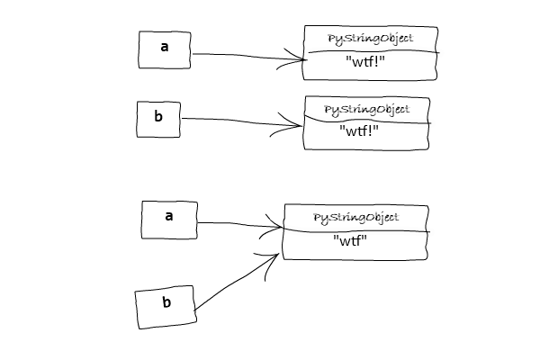
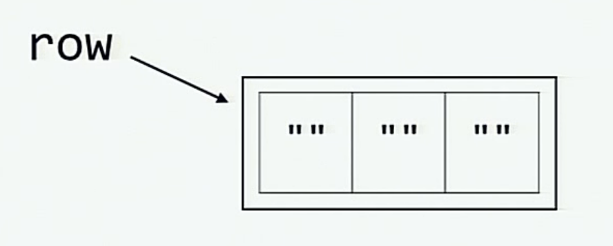

What the f*ck Python! üò±
Изучение и понимание Python с помощью нестандартного поведения и "магического" поведения.
Другие переводы: English Original | Russian Русский | Chinese 中文 | Vietnamese Tiếng Việt | Spanish Español | Korean 한국어 | Add translation
Еще способы попробовать: Interactive | CLI
Python, будучи прекрасно разработанным языком программирования высокого уровня с интерпретатором, предоставляет нам множество возможностей для удобства программиста. Но иногда результаты работы фрагмента Python могут показаться неочевидными на первый взгляд.
Вот забавный проект, пытающийся объяснить, что именно происходит под капотом некоторых неинтуитивных сниппетов и менее известных возможностей Python.
Хотя некоторые из примеров, которые вы увидите ниже, возможно, не являются WTF в прямом смысле этого слова, но они раскроют некоторые интересные части Python, о которых вы могли не знать. Я считаю, что это хороший способ изучить внутреннее устройство языка программирования, и я верю, что вам это тоже покажется интересным!
Если вы опытный программист на Python, вы можете принять это как вызов, чтобы получить большинство из них правильно с первой попытки. Возможно, вы уже сталкивались с некоторыми из них раньше, и я смогу оживить ваши старые добрые воспоминания! :sweat_smile:
PS: Если вы постоянный читатель, вы можете узнать о новых изменениях здесь (примеры, отмеченные звездочкой - это примеры, добавленные в последней основной редакции).
Ну чтож, начнем...
Table of Contents
- Структура примеров
- Применение
- üëÄ –ü—Ä–∏–º–µ—Ä—ã
- Раздел: Напряги мозги!
- ▶ Перво-наперво! *
- ▶ Иногда строки могут быть хитрыми
- ▶ Осторожнее с цепочками операций
- ▶ Как не надо использовать оператор
is - ▶ Мистика хэширования
- ▶ В глубине души мы все одинаковы
- ▶ Беспорядок внутри порядка *
- ▶ Продолжай пытаться... *
- ▶ Для чего?
- ▶ Расхождение во времени оценки
- ▶
is not ...не являетсяis(not ...) - ▶ Крестики-нолики, где X побеждает в первой попытке!
- ▶ Переменная Шредингера
- ▶ The chicken-egg problem *
- ▶ Отношения подклассов
- ▶ Методы равенства и тождества
- ▶ All-true-ation *
- ▶ Удивительная запятая
- ▶ Строки и обратные слеши
- ▶ not knot!
- ▶ Строки с половиной тройных кавычек
- ▶ What's wrong with booleans?
- ▶ Атрибуты класса и атрибуты экземпляра
- ▶ yielding None
- ▶ Yielding из... возврата! *
- ▶ NaN-рефлексивность *
- ▶ Мутация неизменного!
- ▶ Исчезающая переменная из внешней области видимости
- ▶ Загадочное преобразование типа ключа
- ▶ Посмотрим, сможете ли вы угадать это?
- ▶ Exceeds the limit for integer string conversion
- Раздел: Скользкие склоны
- ▶ Изменение словаря во время итерации по нему
- ▶ Упрямая операция
del - ▶ Переменная вне области видимости
- ▶ Удаление элемента списка во время итерации
- ▶ zip итераторов с потерями *
- ▶ Loop variables leak out!
- ▶ Остерегайтесь мутабельных аргументов по умолчанию!
- ▶ Catching the Exceptions
- ▶ Same operands, different story!
- ▶ Разрешение имен, игнорирующее область действия класса
- ▶ Округление как у банкира *
- ▶ Needles in a Haystack *
- ▶ Splitsies *
- ▶ Дикий импорт *
- ▶ Все отсортировано? *
- ▶ Полуночное время не существует?
- Раздел: Скрытые сокровища!
- ▶ О'кей Питон, ты можешь заставить меня летать?
- ▶
goto, но почему? - ▶ Держитесь!
- ▶ Давайте встретимся с дружелюбным языковым дядей на всю жизнь
- ▶ Даже Python понимает, что любовь - это сложно
- ▶ Да, это существует!
- ▶ Многоточие *
- ▶ Inpinity
- ▶ Let's mangle
- Раздел: Внешность обманчива!
- Раздел: Разное
- Contributing
- Благодарности
- üéì Лицензия
- Удивите и своих друзей!
- Больше подобных материалов?
Структура примеров
Все примеры имеют следующую структуру:
▶ Какой-то заголовок
# Код с приколдесами. # Подготовка к магии...Вывод (Python версия(и)):
(Опционально): Одна строка, описывающая неожиданный результат>>> triggering_statement Неожиданные —Ä–µ–∑—É–ª—å—Ç–∞—Ç—ãüí° Объяснение:
- Краткое объяснение того, что происходит и почему это происходит.
Вывод (Python версия(и)):# Код # Дополнительные примеры для дальнейшего разъяснения (если необходимо)>>> trigger # какой-нибудь пример, позволяющий легко раскрыть магию # обоснованный вывод
Важно: Все примеры протестированы на интерактивном интерпретаторе Python 3.5.2, и они должны работать для всех версий Python, если это явно не указано перед выводом.
Применение
Хороший способ получить максимальную пользу от этих примеров, на мой взгляд, - читать их в последовательном порядке, причем для каждого примера: - Внимательно прочитайте исходный код для настройки примера. Если вы опытный программист на Python, то в большинстве случаев вы сможете предугадать, что произойдет дальше. - Прочитайте фрагменты вывода и, + Проверьте, совпадают ли выходные данные с вашими ожиданиями. + Убедитесь, что вы знаете точную причину, по которой вывод получился именно таким. - Если ответ отрицательный (что совершенно нормально), сделайте глубокий вдох и прочитайте объяснение (а если вы все еще не понимаете, крикните! и создайте проблему здесь). - Если "да", похлопайте себя по спине и переходите к следующему примеру.
PS: Вы также можете читать WTFPython в командной строке, используя pypi package,
$ pip install wtfpython -U
$ wtfpython
üëÄ –ü—Ä–∏–º–µ—Ä—ã
Секция: Напряги мозги!
▶ Важное о главном!
По какой-то причине "моржовый оператор"(walrus) (:=) в Python 3.8 стал довольно популярным. Давайте проверим его,
1.
# Python version 3.8+
>>> a = "wtf_walrus"
>>> a
'wtf_walrus'
>>> a := "wtf_walrus"
File "<stdin>", line 1
a := "wtf_walrus"
^
SyntaxError: invalid syntax
>>> (a := "wtf_walrus") # This works though
'wtf_walrus'
>>> a
'wtf_walrus'
2 .
# Python version 3.8+
>>> a = 6, 9
>>> a
(6, 9)
>>> (a := 6, 9)
(6, 9)
>>> a
6
>>> a, b = 6, 9 # Typical unpacking
>>> a, b
(6, 9)
>>> (a, b = 16, 19) # Oops
File "<stdin>", line 1
(a, b = 16, 19)
^
SyntaxError: invalid syntax
>>> (a, b := 16, 19) # This prints out a weird 3-tuple
(6, 16, 19)
>>> a # a is still unchanged?
6
>>> b
16
üí° Обьяснение
Быстрый разбор что такое "моржовый оператор" (walrus)
"Моржовый оператор" (:=) была введена в Python 3.8, она может быть полезна в ситуациях, когда вы хотите присвоить значения переменным в выражении.
def some_func():
# Assume some expensive computation here
# time.sleep(1000)
return 5
# So instead of,
if some_func():
print(some_func()) # Which is bad practice since computation is happening twice
# or
a = some_func()
if a:
print(a)
# Now you can concisely write
if a := some_func():
print(a)
Вывод (> 3.8):
5
5
5
Это сэкономило одну строку кода и неявно предотвратило вызов some_func дважды.
-
Непарентезированное "выражение присваивания" (использование моржового оператора), ограничено на верхнем уровне, отсюда
SyntaxErrorв выраженииa := "wtf_walrus"первого фрагмента. Расстановка парентез сработала, как и ожидалось, и присвоилаa. -
Как обычно, выделение скобками выражения, содержащего оператор
=, не допускается. Отсюда синтаксическая ошибка в(a, b = 6, 9). -
Синтаксис моржового оператора имеет вид
NAME:= expr, гдеNAME- допустимый идентификатор, аexpr- допустимое выражение. Следовательно, упаковка и распаковка итерабельных выражений не поддерживается, что означает, -
(a := 6, 9)is equivalent to((a := 6), 9)and ultimately(a, 9)(wherea's value is 6')>>> (a := 6, 9) == ((a := 6), 9) True >>> x = (a := 696, 9) >>> x (696, 9) >>> x[0] is a # Both reference same memory location True -
Similarly,
(a, b := 16, 19)is equivalent to(a, (b := 16), 19)which is nothing but a 3-tuple.
▶ Строки иногда ведут себя непредсказуемо
1.
>>> a = "some_string"
>>> id(a)
140420665652016
>>> id("some" + "_" + "string") # Notice that both the ids are same.
140420665652016
2.
>>> a = "wtf"
>>> b = "wtf"
>>> a is b
True
>>> a = "wtf!"
>>> b = "wtf!"
>>> a is b
False
3.
>>> a, b = "wtf!", "wtf!"
>>> a is b # Все версии, кроме 3.7.x
True
>>> a = "wtf!"; b = "wtf!"
>>> a is b # Это выведет True или False в зависимости от того, где вы вызываете (python shell / ipython / as a script)
False
# This time in file some_file.py
a = "wtf!"
b = "wtf!"
print(a is b)
# выводит True при вызове модуля!
4.
Результат (< Python3.7 )
>>> 'a' * 20 is 'aaaaaaaaaaaaaaaaaaaa'
True
>>> 'a' * 21 is 'aaaaaaaaaaaaaaaaaaaaa'
False
Логично, правда?
üí° Объяснение:
- Поведение в первом и втором фрагментах связано с оптимизацией CPython (называемой интернированием строк), которая пытается использовать существующие неизменяемые объекты в некоторых случаях вместо того, чтобы каждый раз создавать новый объект.
- После "интернирования" многие переменные могут ссылаться на один и тот же строковый объект в памяти (тем самым экономя память).
- В приведенных выше фрагментах строки неявно интернированы. Решение о том, когда неявно интернировать строку, зависит от реализации. Существуют некоторые правила, по которым можно определить, будет ли строка интернирована или нет:
- Все строки длины 0 и длины 1 интернируются.
- Строки интернируются во время компиляции (
'wtf'' будет интернирована, но''.join(['w'', 't'', 'f'])` не будет интернирована) - Строки, не состоящие из букв ASCII, цифр или знаков подчеркивания, не интернализируются. Это объясняет, почему
'wtf!'не интернируется из-за!. Реализацию этого правила в CPython можно найти здесь  - Когда
aиbимеют значение"wtf!"в одной строке, интерпретатор Python создает новый объект, а затем одновременно ссылается на вторую переменную. Если вы делаете это в отдельных строках, он не "знает", что уже существует"wtf!"как объект (потому что"wtf!"не является неявно интернированным в соответствии с фактами, упомянутыми выше). Это оптимизация времени компиляции. Эта оптимизация не применяется к версиям CPython 3.7.x (более подробное обсуждение смотрите здесь issue). - Единица компиляции в интерактивной среде, такой как IPython, состоит из одного оператора, тогда как в случае модулей она состоит из всего модуля.
a, b = "wtf!", "wtf!"- это одно утверждение, тогда какa = "wtf!"; b = "wtf!"- это два утверждения в одной строке. Это объясняет, почему тождества различны вa = "wtf!"; b = "wtf!", а также объясняет, почему они одинаковы при вызове вsome_file.py. - Резкое изменение в выводе четвертого фрагмента связано с peephole optimization техникой, известной как Constant folding. Это означает, что выражение
'a'*20заменяется на'aaaaaaaaaaaaaaaaaaaa'во время компиляции, чтобы сэкономить несколько тактов во время выполнения. Складывание констант происходит только для строк длиной менее 21. (Почему? Представьте себе размер файла.pyc, созданного в результате выражения'a'*10**10). Вот исходный текст реализации для этого. - Примечание: В Python 3.7 складывание констант было перенесено из оптимизатора peephole в новый оптимизатор AST с некоторыми изменениями в логике, поэтому четвертый фрагмент не работает в Python 3.7. Подробнее об изменении можно прочитать здесь.
▶ Be careful with chained operations
>>> (False == False) in [False] # makes sense
False
>>> False == (False in [False]) # makes sense
False
>>> False == False in [False] # now what?
True
>>> True is False == False
False
>>> False is False is False
True
>>> 1 > 0 < 1
True
>>> (1 > 0) < 1
False
>>> 1 > (0 < 1)
False
üí° Объяснение:
As per https://docs.python.org/3/reference/expressions.html#comparisons
Формально, если a, b, c, ..., y, z - выражения, а op1, op2, ..., opN - операторы сравнения, то a op1 b op2 c ... y opN z эквивалентно a op1 b и b op2 c и ... y opN z, за исключением того, что каждое выражение оценивается не более одного раза.
Хотя такое поведение может показаться вам глупым в приведенных выше примерах, оно просто фантастично для таких вещей, как a == b == c и 0 <= x <= 100.
False is False is Falseэквивалентно(False is False) и (False is False).True is False == Falseэквивалентно(True is False) and (False == False)и так как первая часть высказывания (True is False``) оценивается вFalse, то все выражение оценивается в `False.1 > 0 < 1эквивалентно(1 > 0) и (0 < 1), которое оценивается вTrue.- Выражение
(1 > 0) < 1эквивалентноTrue < 1–∏–í итоге,>>> int(True) 1 >>> True + 1 # не имеет значения для данного примера, но просто для интереса 21 < 1выполняется и дает результатFalse
▶ Как не надо использовать оператор is
Ниже приведен очень известный пример, представленный во всем Интернете.
1.
>>> a = 256
>>> b = 256
>>> a is b
True
>>> a = 257
>>> b = 257
>>> a is b
False
2.
>>> a = []
>>> b = []
>>> a is b
False
>>> a = tuple()
>>> b = tuple()
>>> a is b
True
3. Результат
>>> a, b = 257, 257
>>> a is b
True
Вывод (Python 3.7.x specifically)
>>> a, b = 257, 257
>>> a is b
False
üí° Объяснение:
Разница между is и ==.
- Оператор
isпроверяет, ссылаются ли оба операнда на один и тот же объект (т.е. проверяет, совпадают ли идентификаторы операндов или нет). - Оператор
==сравнивает значения обоих операндов и проверяет, одинаковы ли они. - Таким образом, оператор
isпредназначен для равенства ссылок, а==- для равенства значений. Пример, чтобы прояснить ситуацию,>>> class A: pass >>> A() is A() # These are two empty objects at two different memory locations. False
256 - существующий объект, а 257 - нет.
При запуске python будут выделены числа от -5 до 256. Эти числа используются часто, поэтому имеет смысл просто иметь их наготове.
Цитирую по https://docs.python.org/3/c-api/long.html
Текущая реализация хранит массив целочисленных объектов для всех целых чисел от -5 до 256, когда вы создаете int в этом диапазоне, вы просто получаете обратно ссылку на существующий объект. Поэтому должно быть возможно изменить значение 1. Я подозреваю, что поведение Python в этом случае не определено. :-)
>>> id(256)
10922528
>>> a = 256
>>> b = 256
>>> id(a)
10922528
>>> id(b)
10922528
>>> id(257)
140084850247312
>>> x = 257
>>> y = 257
>>> id(x)
140084850247440
>>> id(y)
140084850247344
Здесь интерпретатору не хватает мозгов при выполнении y = 257 понять, что мы уже создали целое число со значением 257, и поэтому он продолжает создавать другой объект в памяти.
Подобная оптимизация применима и к другим изменяемым объектам, таким как пустые кортежи. Поскольку списки являются изменяемыми, поэтому [] is [] вернет False, а () is () вернет True. Это объясняет наш второй фрагмент. Перейдем к третьему,
*И a, и b ссылаются на один и тот же объект при инициализации одним и тем же значением в одной и той же строке.
Вывод
>>> a, b = 257, 257
>>> id(a)
140640774013296
>>> id(b)
140640774013296
>>> a = 257
>>> b = 257
>>> id(a)
140640774013392
>>> id(b)
140640774013488
-
Когда a и b устанавливаются в
257в одной строке, интерпретатор Python создает новый объект, а затем одновременно ссылается на вторую переменную. Если вы делаете это в отдельных строках, он не "знает", что объект257уже существует. -
Это оптимизация компилятора и относится именно к интерактивной среде. Когда вы вводите две строки в живом интерпретаторе, они компилируются отдельно, поэтому оптимизируются отдельно. Если бы вы попробовали этот пример в файле `.py', вы бы не увидели такого же поведения, потому что файл компилируется весь сразу. Эта оптимизация не ограничивается целыми числами, она работает и для других неизменяемых типов данных, таких как строки (проверьте пример "Строки - это сложно") и плавающие числа,
>>> a, b = 257.0, 257.0
>>> a is b
True
- Почему это не сработало в Python 3.7? Абстрактная причина в том, что такие оптимизации компилятора зависят от реализации (т.е. могут меняться в зависимости от версии, ОС и т.д.). Я все еще выясняю, какое именно изменение реализации вызвало проблему, вы можете проверить этот issue для получения обновлений.
▶ Hash brownies
1.
some_dict = {}
some_dict[5.5] = "JavaScript"
some_dict[5.0] = "Ruby"
some_dict[5] = "Python"
Вывод:
>>> some_dict[5.5]
"JavaScript"
>>> some_dict[5.0] # "Python" destroyed the existence of "Ruby"?
"Python"
>>> some_dict[5]
"Python"
>>> complex_five = 5 + 0j
>>> type(complex_five)
complex
>>> some_dict[complex_five]
"Python"
Так почему же Python повсюду?
üí° Объяснение.
- Уникальность ключей в словаре Python определяется эквивалентностью, а не тождеством. Поэтому, даже если
5,5.0и5 + 0jявляются различными объектами разных типов, поскольку они равны, они не могут находиться в одном и том –∂–µ–¥–∏–∫—Ç–µ(–∏–ª–∏–Ω–∞–±–æ—Ä–µ). Как только вы вставите любой из них, попытка поиска по любому другому, но эквивалентному ключу будет успешной с исходным сопоставленным значением (а не завершится ошибкойKeyError):>>> 5 == 5.0 == 5 + 0j True >>> 5 is not 5.0 is not 5 + 0j True >>> some_dict = {} >>> some_dict[5.0] = "Ruby" >>> 5.0 in some_dict True >>> (5 in some_dict) and (5 + 0j in some_dict) True - Это применимо и при установке элемента. Поэтому, когда вы делаете
some_dict[5] = "Python", Python находит существующий элемент с эквивалентным ключом5.0 -> "Ruby", перезаписывает его значение на место, а исходный ключ оставляет в покое.>>> some_dict {5.0: 'Ruby'} >>> some_dict[5] = "Python" >>> some_dict {5.0: 'Python'} -
Итак, как мы можем обновить ключ до
5(вместо5.0)? На самом деле мы не можем сделать это обновление на месте, но что мы можем сделать, так это сначала удалить ключ (del some_dict[5.0]), а затем установить его (some_dict[5]), чтобы получить целое число5в качестве ключа вместо плавающего5.0, хотя это нужно в редких случаях. -
Как Python нашел
5в словаре, содержащем5.0? Python делает это за постоянное время без необходимости сканирования каждого элемента, используя хэш-функции. Когда Python ищет ключfooв словаре, он сначала вычисляетhash(foo)(что выполняется в постоянном времени). Поскольку в Python требуется, чтобы объекты, которые сравниваются одинаково, имели одинаковое хэш-значение (docs здесь),5,5.0и5 + 0jимеют одинаковое хэш-значение.Примечание: Обратное не обязательно верно: Объекты с одинаковыми хэш-значениями сами могут быть неравными. (Это вызывает так называемую хэш-коллизию и ухудшает производительность постоянного времени, которую обычно обеспечивает хэширование).>>> 5 == 5.0 == 5 + 0j True >>> hash(5) == hash(5.0) == hash(5 + 0j) True
▶ В глубине души мы все одинаковы.
class WTF:
pass
Вывод:
>>> WTF() == WTF() # two different instances can't be equal
False
>>> WTF() is WTF() # identities are also different
False
>>> hash(WTF()) == hash(WTF()) # hashes _should_ be different as well
True
>>> id(WTF()) == id(WTF())
True
üí° Объяснение:
- При вызове
idPython создал объект классаWTFи передал его функцииid. Функцияidзабирает свойid(местоположение в памяти) и выбрасывает объект. Объект уничтожается. - Когда мы делаем это дважды подряд, Python выделяет ту же самую область памяти и для второго объекта. Поскольку (в CPython)
idиспользует участок памяти в качестве идентификатора объекта, идентификатор двух объектов одинаков. - Таким образом, id объекта уникален только в течение жизни объекта. После уничтожения объекта или до его создания, что-то другое может иметь такой же id.
- Но почему оператор
isимеет значениеFalse? Давайте посмотрим с помощью этого фрагмента.class WTF(object): def __init__(self): print("I") def __del__(self): print("D")
Вывод:
>>> WTF() is WTF()
I
I
D
D
False
>>> id(WTF()) == id(WTF())
I
D
I
D
True
▶ Нарушение в пределах порядка *
from collections import OrderedDict
dictionary = dict()
dictionary[1] = 'a'; dictionary[2] = 'b';
ordered_dict = OrderedDict()
ordered_dict[1] = 'a'; ordered_dict[2] = 'b';
another_ordered_dict = OrderedDict()
another_ordered_dict[2] = 'b'; another_ordered_dict[1] = 'a';
class DictWithHash(dict):
"""
A dict that also implements __hash__ magic.
"""
__hash__ = lambda self: 0
class OrderedDictWithHash(OrderedDict):
"""
An OrderedDict that also implements __hash__ magic.
"""
__hash__ = lambda self: 0
Вывод
>>> dictionary == ordered_dict # If a == b
True
>>> dictionary == another_ordered_dict # and b == c
True
>>> ordered_dict == another_ordered_dict # then why isn't c == a ??
False
# Мы все знаем, что множество состоит только из уникальных элементов,
# давайте попробуем составить множество из этих словарей и посмотрим, что получится...
>>> len({dictionary, ordered_dict, another_ordered_dict})
Traceback (most recent call last):
File "<stdin>", line 1, in <module>
TypeError: unhashable type: 'dict'
# Имеет смысл, поскольку в словаре не реализовано свойство __hash__, ну чтож давайте использовать
# наши классы-обертки.
>>> dictionary = DictWithHash()
>>> dictionary[1] = 'a'; dictionary[2] = 'b';
>>> ordered_dict = OrderedDictWithHash()
>>> ordered_dict[1] = 'a'; ordered_dict[2] = 'b';
>>> another_ordered_dict = OrderedDictWithHash()
>>> another_ordered_dict[2] = 'b'; another_ordered_dict[1] = 'a';
>>> len({dictionary, ordered_dict, another_ordered_dict})
1
>>> len({ordered_dict, another_ordered_dict, dictionary}) # changing the order
2
Что здесь происходит?
üí° Объяснение:
-
Причина, по которой не выполняется транзитивное равенство между
dictionary,ordered_dictиanother_ordered_dict, заключается в том, как реализован метод__eq__в классеOrderedDict. Из docsТесты равенства между объектами OrderedDict чувствительны к порядку и реализуются как
list(od1.items())==list(od2.items()). Тесты на равенство между объектамиOrderedDictи другими объектами Mapping нечувствительны к порядку, как обычные словари. - Причина такого поведения равенства в том, что оно позволяет напрямую подставлять объектыOrderedDictвезде, где используется обычный словарь. - Итак, почему изменение порядка влияет на длину генерируемого объектаset? Ответ заключается только в отсутствии интранзитивного равенства. Поскольку множества являются "неупорядоченными" коллекциями уникальных элементов, порядок вставки элементов не должен иметь значения. Но в данном случае он имеет значение. Давайте немного разберемся в этом,Таким образом, несоответствие связано с тем, что>>> some_set = set() >>> some_set.add(dictionary) # these are the mapping objects from the snippets above >>> ordered_dict in some_set True >>> some_set.add(ordered_dict) >>> len(some_set) 1 >>> another_ordered_dict in some_set True >>> some_set.add(another_ordered_dict) >>> len(some_set) 1 >>> another_set = set() >>> another_set.add(ordered_dict) >>> another_ordered_dict in another_set False >>> another_set.add(another_ordered_dict) >>> len(another_set) 2 >>> dictionary in another_set True >>> another_set.add(another_ordered_dict) >>> len(another_set) 2another_ordered_dict в another_setявляетсяFalse, потому чтоordered_dictуже присутствовал вanother_setи, как было замечено ранее,ordered_dict == another_ordered_dictявляетсяFalse.
▶ Keep trying... *
def some_func():
try:
return 'from_try'
finally:
return 'from_finally'
def another_func():
for _ in range(3):
try:
continue
finally:
print("Finally!")
def one_more_func(): # A gotcha!
try:
for i in range(3):
try:
1 / i
except ZeroDivisionError:
# Let's throw it here and handle it outside for loop
raise ZeroDivisionError("A trivial divide by zero error")
finally:
print("Iteration", i)
break
except ZeroDivisionError as e:
print("Zero division error occurred", e)
Результат:
>>> some_func()
'from_finally'
>>> another_func()
Finally!
Finally!
Finally!
>>> 1 / 0
Traceback (most recent call last):
File "<stdin>", line 1, in <module>
ZeroDivisionError: division by zero
>>> one_more_func()
Iteration 0
üí° Объяснение:
- Когда оператор
return,breakилиcontinueвыполняется в набореtryоператора "try...finally", на выходе также выполняется пунктfinally. - Возвращаемое значение функции определяется последним выполненным оператором
return. Поскольку предложениеfinallyвыполняется всегда, операторreturn, выполненный в предложенииfinally, всегда будет последним. - Оговорка заключается в том, что если в предложении finally выполняется оператор
returnилиbreak, то временно сохраненное исключение отбрасывается.
▶ Для чего?
some_string = "wtf"
some_dict = {}
for i, some_dict[i] in enumerate(some_string):
i = 10
Вывод:
>>> some_dict # An indexed dict appears.
{0: 'w', 1: 't', 2: 'f'}
üí° Объяснение:
- Оператор
forопределяется в грамматике Python как:Гдеfor_stmt: 'for' exprlist 'in' testlist ':' suite ['else' ':' suite]exprlist- цель присваивания. Это означает, что эквивалент{exprlist} = {next_value}выполняется для каждого элемента в итерабле. Интересный пример, иллюстрирующий это:for i in range(4): print(i) i = 10
Результат:
0
1
2
3
Ожидали ли вы, что цикл будет запущен только один раз?
üí° Объяснение:.
-
Оператор присваивания
i = 10никогда не влияет на итерации цикла из-за того, как циклы for работают в Python. Перед началом каждой итерации следующий элемент, предоставляемый итератором (в данном случаеrange(4)), распаковывается и присваивается переменной целевого списка (в данном случаеi). -
Функция
enumerate(some_string)на каждой итерации выдает новое значениеi(счетчик, идущий вверх) и символ изsome_string. Затем она устанавливает (только что присвоенный) ключiсловаряsome_dictна этот символ. Развертывание цикла можно упростить следующим образом:>>> i, some_dict[i] = (0, 'w') >>> i, some_dict[i] = (1, 't') >>> i, some_dict[i] = (2, 'f') >>> some_dict
▶ Несоответствие времени оценки
1.
array = [1, 8, 15]
# A typical generator expression
gen = (x for x in array if array.count(x) > 0)
array = [2, 8, 22]
Вывод:
>>> print(list(gen)) # Where did the other values go?
[8]
2.
array_1 = [1,2,3,4]
gen_1 = (x for x in array_1)
array_1 = [1,2,3,4,5]
array_2 = [1,2,3,4]
gen_2 = (x for x in array_2)
array_2[:] = [1,2,3,4,5]
Вывод:
>>> print(list(gen_1))
[1, 2, 3, 4]
>>> print(list(gen_2))
[1, 2, 3, 4, 5]
3.
array_3 = [1, 2, 3]
array_4 = [10, 20, 30]
gen = (i + j for i in array_3 for j in array_4)
array_3 = [4, 5, 6]
array_4 = [400, 500, 600]
Вывод:
>>> print(list(gen))
[401, 501, 601, 402, 502, 602, 403, 503, 603]
üí° Пояснение
- В выражении generator условие
inоценивается во время объявления, но условное условие оценивается во время выполнения. - Поэтому перед выполнением
arrayпереназначается на список[2, 8, 22], а поскольку из1,8и15только счетчик8больше0, генератор выдает только8. - Различия в выводе
g1иg2во второй части связаны с тем, как переменнымarray_1иarray_2присваиваются новые значения. - В первом случае
array_1привязывается к новому объекту[1,2,3,4,5], а поскольку предложениеinоценивается во время объявления, оно по-прежнему ссылается на старый объект[1,2,3,4](который не уничтожается). - Во втором случае присвоение среза
array_2обновляет тот же старый объект[1,2,3,4]до[1,2,3,4,5]. Следовательно, иg2, иarray_2по-прежнему имеют ссылку на один и тот же объект (который теперь обновлен до[1,2,3,4,5]). -
Хорошо, следуя логике, рассмотренной до сих пор, не должно ли значение
list(gen)в третьем фрагменте быть[11, 21, 31, 12, 22, 32, 13, 23, 33]? (потому чтоarray_3иarray_4будут вести себя так же, какarray_1). Причина, по которой (только) значенияarray_4обновляются, объясняется в PEP-289Только крайнее for-выражение оценивается немедленно, остальные выражения откладываются до запуска генератора.
▶ is not ... is not is (not ...)
>>> 'something' is not None
True
>>> 'something' is (not None)
False
üí° Пояснение
is notявляется единым бинарным оператором, и его поведение отличается от раздельного использованияisиnot.is notимеет значениеFalse, если переменные по обе стороны оператора указывают на один и тот же объект, иTrueв противном случае.- В примере
(not None)оценивается вTrue, поскольку значениеNoneявляетсяFalseв булевом контексте, поэтому выражение становится'something' is True.
▶ Крестики-нолики, где X побеждает с первой попытки!
# Let's initialize a row
row = [""] * 3 #row i['', '', '']
# Let's make a board
board = [row] * 3
Результат:
>>> board
[['', '', ''], ['', '', ''], ['', '', '']]
>>> board[0]
['', '', '']
>>> board[0][0]
''
>>> board[0][0] = "X"
>>> board
[['X', '', ''], ['X', '', ''], ['X', '', '']]
Мы же не назначили три Х?
üí° Объяснение:
Когда мы инициализируем переменную row, эта визуализация объясняет, что происходит в памяти

А когда board инициализируется путем умножения row, вот что происходит в памяти (каждый из элементов board[0], board[1] и board[2] является ссылкой на тот же список, на который ссылается row)

Мы можем избежать этого сценария, не используя переменную row для генерации board. (Вопрос задан в этом выпуске).
>>> board = [['']*3 for _ in range(3)]
>>> board[0][0] = "X"
>>> board
[['X', '', ''], ['', '', ''], ['', '', '']]
▶ Переменная Шредингера *
funcs = []
results = []
for x in range(7):
def some_func():
return x
funcs.append(some_func)
results.append(some_func()) # note the function call here
funcs_results = [func() for func in funcs]
Вывод (Python version):
>>> results
[0, 1, 2, 3, 4, 5, 6]
>>> funcs_results
[6, 6, 6, 6, 6, 6, 6]
Значения x были разными в каждой итерации до добавления some_func к funcs, но все функции возвращают 6, когда они оцениваются после завершения цикла.
2.
>>> powers_of_x = [lambda x: x**i for i in range(10)]
>>> [f(2) for f in powers_of_x]
[512, 512, 512, 512, 512, 512, 512, 512, 512, 512]
üí° Объяснение:
- При определении функции внутри цикла, которая использует переменную цикла в своем теле, закрытие функции цикла привязывается к переменной, а не к ее значению. Функция ищет
xв окружающем контексте, а не использует значениеxна момент создания функции. Таким образом, все функции используют для вычислений последнее значение, присвоенное переменной. Мы можем видеть, что используетсяxиз окружающего контекста (т.е. не локальная переменная):Since>>> import inspect >>> inspect.getclosurevars(funcs[0]) ClosureVars(nonlocals={}, globals={'x': 6}, builtins={}, unbound=set())xis a global value, we can change the value that thefuncswill lookup and return by updatingx:
>>> x = 42
>>> [func() for func in funcs]
[42, 42, 42, 42, 42, 42, 42]
- Чтобы получить желаемое поведение, вы можете передать переменную цикла как именованную переменную в функцию. Почему это работает? Потому что это определит переменную внутри области видимости функции. Она больше не будет обращаться к окружающей (глобальной) области видимости для поиска значения переменной, а создаст локальную переменную, которая будет хранить значение
xв данный момент времени.
funcs = []
for x in range(7):
def some_func(x=x):
return x
funcs.append(some_func)
Вывод:
>>> funcs_results = [func() for func in funcs]
>>> funcs_results
[0, 1, 2, 3, 4, 5, 6]
x больше не и спользуется в глобальной области видимости
>>> inspect.getclosurevars(funcs[0])
ClosureVars(nonlocals={}, globals={}, builtins={}, unbound=set())
▶ Проблема курицы и яйца *
1.
>>> isinstance(3, int)
True
>>> isinstance(type, object)
True
>>> isinstance(object, type)
True
Так какой же базовый класс является "окончательным"? Кстати, это еще не все,
2.
>>> class A: pass
>>> isinstance(A, A)
False
>>> isinstance(type, type)
True
>>> isinstance(object, object)
True
3.
>>> issubclass(int, object)
True
>>> issubclass(type, object)
True
>>> issubclass(object, type)
False
üí° Объяснение
тип- это метакласс в Python.- Все в Python является
объектом, что включает в себя как классы, так и их объекты (экземпляры). - Класс
typeявляется метаклассом классаobject, и каждый класс (включаяtype) наследует прямо или косвенно отobject. - Между
objectиtypeнет реального базового класса. Путаница в приведенных выше фрагментах возникает потому, что мы думаем об этих отношениях (issubclassиisinstance) в терминах классов Python. Отношения междуobjectиtypeне могут быть воспроизведены в чистом Python. Точнее говоря, следующие отношения не могут быть воспроизведены в чистом Python,- класс A является экземпляром класса B, а класс B является экземпляром класса A.
- класс A является экземпляром самого себя.
- Эти отношения между
objectиtype(оба являются экземплярами друг друга, а также самих себя) существуют в Python из-за "обмана" на уровне реализации.
▶ Отношения между подклассами
Вывод:
>>> from collections import Hashable
>>> issubclass(list, object)
True
>>> issubclass(object, Hashable)
True
>>> issubclass(list, Hashable)
False
Предполагается, что отношения подклассов должны быть транзитивными, верно? (т.е. если A является подклассом B, а B является подклассом C, то A должен быть подклассом C)
üí° Пояснение:
- Отношения подклассов не обязательно являются транзитивными в Python. Любой может определить свой собственный, произвольный
__subclasscheck__в метаклассе. - Когда вызывается
issubclass(cls, Hashable), он просто ищет не-фальшивый метод "__hash__" вclsили во всем, от чего он наследуется. - Поскольку
objectявляется хэшируемым, аlist- нехэшируемым, это нарушает отношение транзитивности. - Более подробное объяснение можно найти [здесь] (https://www.naftaliharris.com/blog/python-subclass-intransitivity/).
▶ Methods equality and identity
1.
class SomeClass:
def method(self):
pass
@classmethod
def classm(cls):
pass
@staticmethod
def staticm():
pass
Результат:
>>> print(SomeClass.method is SomeClass.method)
True
>>> print(SomeClass.classm is SomeClass.classm)
False
>>> print(SomeClass.classm == SomeClass.classm)
True
>>> print(SomeClass.staticm is SomeClass.staticm)
True
Обращаясь к classm дважды, мы получаем одинаковый объект, но не одинаковый? Давайте посмотрим, что происходит
с экземплярами SomeClass:
2.
o1 = SomeClass()
o2 = SomeClass()
Вывод:
>>> print(o1.method == o2.method)
False
>>> print(o1.method == o1.method)
True
>>> print(o1.method is o1.method)
False
>>> print(o1.classm is o1.classm)
False
>>> print(o1.classm == o1.classm == o2.classm == SomeClass.classm)
True
>>> print(o1.staticm is o1.staticm is o2.staticm is SomeClass.staticm)
True
Двойной доступ к классу или методу создает одинаковые, но не одинаковые объекты для одного и того же экземпляра какого-либо класса.
üí° Пояснение.
- Функции являются дескрипторами. Всякий раз, когда к функции обращаются как к
атрибута, вызывается дескриптор, создавая объект метода, который "связывает" функцию с объектом, владеющим атрибутом.
атрибутом. При вызове метод вызывает функцию, неявно передавая связанный объект в качестве первого аргумента
(именно так мы получаем
selfв качестве первого аргумента, несмотря на то, что не передаем его явно).>>> o1.method <bound method SomeClass.method of <__main__.SomeClass object at ...>> - При многократном обращении к атрибуту каждый раз создается объект метода! Поэтому
o1.method is o1.methodявляется никогда не является истиной. Доступ к функциям как к атрибутам класса (в отличие от экземпляра) не создает методов, однако; поэтомуSomeClass.method is SomeClass.methodявляется истинным.>>> SomeClass.method <function SomeClass.method at ...> classmethodпреобразует функции в методы класса. Методы класса - это дескрипторы, которые при обращении к ним создают объект метода, который связывает класс (тип) объекта, а не сам объект.>>> o1.classm <bound method SomeClass.classm of <class '__main__.SomeClass'>>- В отличие от функций,
classmethodбудет создавать метод и при обращении к нему как к атрибуту класса (в этом случае они привязываются к классу, а не к его типу). ПоэтомуSomeClass.classm is SomeClass.classmявляется ошибочным.>>> SomeClass.classm <bound method SomeClass.classm of <class '__main__.SomeClass'>> - Объект метода сравнивается с равным, если обе функции равны, а связанные объекты одинаковы. Поэтому
o1.method == o1.methodявляется истинным, хотя и не является одним и тем же объектом в памяти. staticmethodпреобразует функции в дескриптор "no-op", который возвращает функцию как есть. Никакой метод никогда не создается, поэтому сравнение сisявляется истинным.>>> o1.staticm <function SomeClass.staticm at ...> >>> SomeClass.staticm <function SomeClass.staticm at ...>- Необходимость создавать новые объекты "метод" каждый раз, когда Python вызывает методы экземпляра, и необходимость изменять аргументы
каждый раз, чтобы вставить
self, сильно сказывается на производительности. CPython 3.7 решил эту проблему, введя новые опкоды, которые работают с вызовом методов без создания временных объектов методов. Это используется только при фактическом вызове функции доступа, так что приведенные здесь фрагменты не затронуты и по-прежнему генерируют методы :)
▶ All-true-ation *
>>> all([True, True, True])
True
>>> all([True, True, False])
False
>>> all([])
True
>>> all([[]])
False
>>> all([[[]]])
True
Почему это изменение True-False?
üí° Объяснение:
-
Реализация функции
allэквивалентна -
py def all(iterable): for element in iterable: if not element: return False return True -
all([])возвращаетTrue, поскольку итерируемый массив пуст. all([[]])возвращаетFalse, поскольку переданный массив имеет один элемент,[], а в python пустой список является ложным.all([[[[]]])и более высокие рекурсивные варианты всегдаTrue. Это происходит потому, что единственный элемент переданного массива ([[...]]) уже не пуст, а списки со значениями являются истинными.
▶ Неожиданная запятая
Вывод (< 3.6):
>>> def f(x, y,):
... print(x, y)
...
>>> def g(x=4, y=5,):
... print(x, y)
...
>>> def h(x, **kwargs,):
File "<stdin>", line 1
def h(x, **kwargs,):
^
SyntaxError: invalid syntax
>>> def h(*args,):
File "<stdin>", line 1
def h(*args,):
^
SyntaxError: invalid syntax
üí° Объяснение:
- Запятая в конце списка формальных параметров функции Python не всегда законна.
- В Python список аргументов определяется частично с помощью ведущих запятых, а частично с помощью проходных запятых. Этот конфликт приводит к ситуациям, когда запятая оказывается в середине, и ни одно правило ее не принимает.
- Примечание: Проблема с запятыми в конце списка аргументов исправлена в Python 3.6. Замечания в этом сообщении кратко обсуждают различные варианты использования запятых в Python.
▶ Строки и обратные слэши
Вывод:
>>> print("\"")
"
>>> print(r"\"")
\"
>>> print(r"\")
File "<stdin>", line 1
print(r"\")
^
SyntaxError: EOL while scanning string literal
>>> r'\'' == "\\'"
True
üí° Пояснение
- В обычной строке python обратная косая черта используется для экранирования символов, которые могут иметь специальное значение (например, одинарная кавычка, двойная кавычка и сама обратная косая черта).
>>> "wt\"f" 'wt"f' - В необработанном строковом литерале (на что указывает префикс
r) обратные косые черты передаются как есть, вместе с поведением экранирования следующего символа.>>> r'wt\"f' == 'wt\\"f' True >>> print(repr(r'wt\"f') 'wt\\"f' >>> print("\n") >>> print(r"\\n") '\\n' - Это означает, что когда синтаксический анализатор встречает обратную косую черту в необработанной строке, он ожидает, что за ней последует другой символ. А в нашем случае (
print(r"\")) обратная косая черта вырвалась из концевой кавычки, оставив парсер без завершающей кавычки (отсюдаSyntaxError). Вот почему обратный слеш не работает в конце необработанной строки.
▶ not knot!
x = True
y = False
Результат:
>>> not x == y
True
>>> x == not y
File "<input>", line 1
x == not y
^
SyntaxError: invalid syntax
üí° Объяснение:
- Старшинство операторов влияет на то, как оценивается выражение, и оператор
==имеет более высокий приоритет, чем операторnotв Python. - Поэтому
not x == yэквивалентноnot (x == y), что эквивалентноnot (True == False), в итоге оценивающемуся вTrue. - Но
x == not yвызываетSyntaxError, потому что его можно считать эквивалентным(x == not) y, а неx == (not y), что можно было бы ожидать на первый взгляд. - Парсер ожидал, что лексема
notбудет частью оператораnot in(потому что оба оператора==иnot inимеют одинаковый приоритет), но после того, как он не смог найти лексемуin, следующую за лексемойnot, он выдаетSyntaxError.
▶ Половина строк в тройных кавычках
Вывод:
>>> print('wtfpython''')
wtfpython
>>> print("wtfpython""")
wtfpython
>>> # The following statements raise `SyntaxError`
>>> # print('''wtfpython')
>>> # print("""wtfpython")
File "<input>", line 3
print("""wtfpython")
^
SyntaxError: EOF while scanning triple-quoted string literal
üí° Объяснение:
- Python поддерживает неявную конкатенацию строковых литералов, Пример,
>>> print("wtf" "python") wtfpython >>> print("wtf" "") # or "wtf""" wtf '''and"""также являются разделителями строк в Python, что вызывает SyntaxError, поскольку интерпретатор Python ожидал завершающую тройную кавычку в качестве разделителя при сканировании текущего встреченного строкового литерала с тройной кавычкой.
▶ Что не так с логическими значениями?
1.
# A simple example to count the number of booleans and
# integers in an iterable of mixed data types.
mixed_list = [False, 1.0, "some_string", 3, True, [], False]
integers_found_so_far = 0
booleans_found_so_far = 0
for item in mixed_list:
if isinstance(item, int):
integers_found_so_far += 1
elif isinstance(item, bool):
booleans_found_so_far += 1
Результат:
>>> integers_found_so_far
4
>>> booleans_found_so_far
0
2.
>>> some_bool = True
>>> "wtf" * some_bool
'wtf'
>>> some_bool = False
>>> "wtf" * some_bool
''
3.
def tell_truth():
True = False
if True == False:
print("I have lost faith in truth!")
Результат (< 3.x):
>>> tell_truth()
I have lost faith in truth!
üí° Объяснение:
-
boolэто подкласс классаintв Python>>> issubclass(bool, int) True >>> issubclass(int, bool) False -
И
Trueи так жеFalseэто инстансы классаint>>> isinstance(True, int) True >>> isinstance(False, int) True -
Целочисленное значение
Trueравно1, аFalseравно0.>>> int(True) 1 >>> int(False) 0 -
Смотри StackOverflow answer там есть объяснение.
-
Изначально в Python не было типа
bool(использовали 0 для false и ненулевое значение 1 для true). В версиях 2.x были добавленыTrue,Falseи типbool, но для обратной совместимостиTrueиFalseнельзя было сделать константами. Они просто были встроенными переменными, и их можно было переназначить. -
Python 3 был несовместим с предыдущими версиями, эту проблему наконец-то исправили, и поэтому последний фрагмент не будет работать с Python 3.x!
▶ Атрибуты класса и экземпляра
1.
class A:
x = 1
class B(A):
pass
class C(A):
pass
Результат:
>>> A.x, B.x, C.x
(1, 1, 1)
>>> B.x = 2
>>> A.x, B.x, C.x
(1, 2, 1)
>>> A.x = 3
>>> A.x, B.x, C.x # C.x changed, but B.x didn't
(3, 2, 3)
>>> a = A()
>>> a.x, A.x
(3, 3)
>>> a.x += 1
>>> a.x, A.x
(4, 3)
2.
class SomeClass:
some_var = 15
some_list = [5]
another_list = [5]
def __init__(self, x):
self.some_var = x + 1
self.some_list = self.some_list + [x]
self.another_list += [x]
Результат:
>>> some_obj = SomeClass(420)
>>> some_obj.some_list
[5, 420]
>>> some_obj.another_list
[5, 420]
>>> another_obj = SomeClass(111)
>>> another_obj.some_list
[5, 111]
>>> another_obj.another_list
[5, 420, 111]
>>> another_obj.another_list is SomeClass.another_list
True
>>> another_obj.another_list is some_obj.another_list
True
üí° Объяснение:
- Переменные класса и переменные экземпляров класса внутренне обрабатываются как словари объекта класса. Если имя переменной не найдено в словаре текущего класса, оно ищется в родительских классах.
- Оператор += изменяет изменяемый объект на месте, не создавая новый объект. Таким образом, изменение атрибута одного экземпляра влияет на другие экземпляры и атрибут класса также.
▶ Возврат None из генератора (yielding None)
some_iterable = ('a', 'b')
def some_func(val):
return "something"
Результат (<= 3.7.x):
>>> [x for x in some_iterable]
['a', 'b']
>>> [(yield x) for x in some_iterable]
<generator object <listcomp> at 0x7f70b0a4ad58>
>>> list([(yield x) for x in some_iterable])
['a', 'b']
>>> list((yield x) for x in some_iterable)
['a', None, 'b', None]
>>> list(some_func((yield x)) for x in some_iterable)
['a', 'something', 'b', 'something']
üí° Объяснение:
- Это баг в обработке yield в генераторах и списочных выражениях CPython.
- Исходный код и объяснение можно найти здесь: https://stackoverflow.com/questions/32139885/yield-in-list-comprehensions-and-generator-expressions
- Связанный отчет об ошибке: https://bugs.python.org/issue10544
- В Python 3.8+ yield внутри списочных выражений больше не допускается и выдает SyntaxError.
▶ Yielding from... return! *
1.
def some_func(x):
if x == 3:
return ["wtf"]
else:
yield from range(x)
Результат (> 3.3):
>>> list(some_func(3))
[]
Куда исчезло "wtf"? Это связано с каким-то особым эффектом yield from? Давайте проверим это. То же самое, это тоже не сработало.
2.
def some_func(x):
if x == 3:
return ["wtf"]
else:
for i in range(x):
yield i
Результат:
>>> list(some_func(3))
[]
То же самое, это тоже не сработало. Что происходит?
üí° Объяснение:
- С Python 3.3 стало возможным использовать оператор return в генераторах с возвращением значения (см. PEP380). В официальной документации говорится, что
"... return expr в генераторе вызывает исключение StopIteration(expr) при выходе из генератора."
-
В случае some_func(3) StopIteration возбуждается в начале из-за оператора return. Исключение StopIteration автоматически перехватывается внутри обертки list(...) и цикла for. Поэтому два вышеприведенных фрагмента приводят к пустому списку.
-
Чтобы получить ["wtf"] из генератора some_func, нам нужно перехватить исключение StopIteration.
try:
next(some_func(3))
except StopIteration as e:
some_string = e.value
>>> some_string
["wtf"]
▶ Nan-reflexivity *
1.
a = float('inf')
b = float('nan')
c = float('-iNf') # These strings are case-insensitive
d = float('nan')
Результат:
>>> a
inf
>>> b
nan
>>> c
-inf
>>> float('some_other_string')
ValueError: could not convert string to float: some_other_string
>>> a == -c # inf==inf
True
>>> None == None # None == None
True
>>> b == d # but nan!=nan
False
>>> 50 / a
0.0
>>> a / a
nan
>>> 23 + b
nan
2.
>>> x = float('nan')
>>> y = x / x
>>> y is y # identity holds
True
>>> y == y # equality fails of y
False
>>> [y] == [y] # but the equality succeeds for the list containing y
True
üí° Объяснение:
-
'inf'и'nan'- это специальные строки (без учета регистра), которые при явном приведении к типу float используются для представления математической "бесконечности" и "не число" соответственно. -
Поскольку согласно стандартам IEEE
NaN! = NaN, соблюдение этого правила нарушает предположение о рефлексивности элемента коллекции в Python, то есть если x является частью коллекции, такой какlist, реализации, такие как сравнение, основаны на предположении, чтоx == x. Из-за этого предположения сначала сравниваются идентификаторы (так как это быстрее), когда сравниваются два элемента, а значения сравниваются только при несовпадении идентификаторов. Следующий фрагмент сделает вещи более ясными:
>>> x = float('nan')
>>> x == x, [x] == [x]
(False, True)
>>> y = float('nan')
>>> y == y, [y] == [y]
(False, True)
>>> x == y, [x] == [y]
(False, False)
Поскольку идентификаторы x и y разные, рассматриваются значения, которые также различаются; следовательно, на этот раз сравнение возвращает False.
- Интересное чтение: Рефлексивность и другие основы цивилизации
▶ Мутируем немутируемое!
Это может показаться тривиальным, если вы знаете, как работают ссылки в Python. Но если вы не знаете, то это может быть немного удивительно.
some_tuple = ("A", "tuple", "with", "values")
another_tuple = ([1, 2], [3, 4], [5, 6])
Результат:
>>> some_tuple[2] = "change this"
TypeError: 'tuple' object does not support item assignment
>>> another_tuple[2].append(1000) #This throws no error
>>> another_tuple
([1, 2], [3, 4], [5, 6, 1000])
>>> another_tuple[2] += [99, 999]
TypeError: 'tuple' object does not support item assignment
>>> another_tuple
([1, 2], [3, 4], [5, 6, 1000, 99, 999])
Но я думал, что кортежи неизменяемы... Что происходит?
üí° Объяснение:
-
Цитата из https://docs.python.org/3/reference/datamodel.html
Неизменяемые последовательности Объект неизменяемого типа последовательности не может измениться после создания. (Если объект содержит ссылки на другие объекты, эти другие объекты могут быть изменяемыми и могут быть изменены; однако набор объектов, на которые непосредственно ссылается неизменяемый объект, не может изменяться.)
-
Оператор
+=изменяет список на месте. Присваивание элемента не работает, но когда возникает исключение, элемент уже был изменен на месте. - Также есть объяснение в официальном Python FAQ.
▶ Исчезновение переменной из внешней области видимости
e = 7
try:
raise Exception()
except Exception as e:
pass
Результат (Python 2.x):
>>> print(e)
# prints nothing
Результат (Python 3.x):
>>> print(e)
NameError: name 'e' is not defined
üí° Объяснение:
- Source: https://docs.python.org/3/reference/compound_stmts.html#except
When an exception has been assigned using as target, it is cleared at the end of the except clause. This is as if
except E as N:
foo
was translated into
except E as N:
try:
foo
finally:
del N
This means the exception must be assigned to a different name to be able to refer to it after the except clause. Exceptions are cleared because, with the traceback attached to them, they form a reference cycle with the stack frame, keeping all locals in that frame alive until the next garbage collection occurs.
-
The clauses are not scoped in Python. Everything in the example is present in the same scope, and the variable
egot removed due to the execution of theexceptclause. The same is not the case with functions that have their separate inner-scopes. The example below illustrates this:def f(x): del(x) print(x) x = 5 y = [5, 4, 3]Результат:
>>> f(x) UnboundLocalError: local variable 'x' referenced before assignment >>> f(y) UnboundLocalError: local variable 'x' referenced before assignment >>> x 5 >>> y [5, 4, 3] -
In Python 2.x, the variable name
egets assigned toException()instance, so when you try to print, it prints nothing.Результат (Python 2.x):
>>> e Exception() >>> print e # Nothing is printed!
▶ The mysterious key type conversion
class SomeClass(str):
pass
some_dict = {'s': 42}
Результат:
>>> type(list(some_dict.keys())[0])
str
>>> s = SomeClass('s')
>>> some_dict[s] = 40
>>> some_dict # expected: Two different keys-value pairs
{'s': 40}
>>> type(list(some_dict.keys())[0])
str
üí° Объяснение:
- Both the object
sand the string"s"hash to the same value becauseSomeClassinherits the__hash__method ofstrclass. SomeClass("s") == "s"evaluates toTruebecauseSomeClassalso inherits__eq__method fromstrclass.- Since both the objects hash to the same value and are equal, they are represented by the same key in the dictionary.
- For the desired behavior, we can redefine the
__eq__method inSomeClassclass SomeClass(str): def __eq__(self, other): return ( type(self) is SomeClass and type(other) is SomeClass and super().__eq__(other) ) # When we define a custom __eq__, Python stops automatically inheriting the # __hash__ method, so we need to define it as well __hash__ = str.__hash__ some_dict = {'s':42}
Результат:
>>> s = SomeClass('s')
>>> some_dict[s] = 40
>>> some_dict
{'s': 40, 's': 42}
>>> keys = list(some_dict.keys())
>>> type(keys[0]), type(keys[1])
(__main__.SomeClass, str)
▶ Посмотрим, сможете ли вы угадать что здесь?
a, b = a[b] = {}, 5
Результат:
>>> a
{5: ({...}, 5)}
üí° Объяснение:
- According to Python language reference, assignment statements have the form
and
(target_list "=")+ (expression_list | yield_expression)
An assignment statement evaluates the expression list (remember that this can be a single expression or a comma-separated list, the latter yielding a tuple) and assigns the single resulting object to each of the target lists, from left to right.
-
The
+in(target_list "=")+means there can be one or more target lists. In this case, target lists area, banda[b](note the expression list is exactly one, which in our case is{}, 5). -
After the expression list is evaluated, its value is unpacked to the target lists from left to right. So, in our case, first the
{}, 5tuple is unpacked toa, band we now havea = {}andb = 5. -
ais now assigned to{}, which is a mutable object. -
The second target list is
a[b](you may expect this to throw an error because bothaandbhave not been defined in the statements before. But remember, we just assignedato{}andbto5). -
Now, we are setting the key
5in the dictionary to the tuple({}, 5)creating a circular reference (the{...}in the output refers to the same object thatais already referencing). Another simpler example of circular reference could beSimilar is the case in our example (>>> some_list = some_list[0] = [0] >>> some_list [[...]] >>> some_list[0] [[...]] >>> some_list is some_list[0] True >>> some_list[0][0][0][0][0][0] == some_list Truea[b][0]is the same object asa) -
So to sum it up, you can break the example down to
And the circular reference can be justified by the fact thata, b = {}, 5 a[b] = a, ba[b][0]is the same object asa>>> a[b][0] is a True
▶ Exceeds the limit for integer string conversion
>>> # Python 3.10.6
>>> int("2" * 5432)
>>> # Python 3.10.8
>>> int("2" * 5432)
>>> # Python 3.10.6
222222222222222222222222222222222222222222222222222222222222222...
>>> # Python 3.10.8 and Python 3.11
Traceback (most recent call last):
...
ValueError: Exceeds the limit (4300) for integer string conversion:
value has 5432 digits; use sys.set_int_max_str_digits()
to increase the limit.
üí° Объяснение:
Этот вызов int() прекрасно работает в Python 3.10.6 и вызывает ошибку ValueError в Python 3.10.8, 3.11. Обратите внимание, что Python все еще может работать с большими целыми числами. Ошибка возникает только при преобразовании между целыми числами и строками.
К счастью, вы можете увеличить предел допустимого количества цифр, если ожидаете, что операция превысит его. Для этого можно воспользоваться одним из следующих способов:
- -X int_max_str_digits command-line flag
- set_int_max_str_digits() function from the sys module
- PYTHONINTMAXSTRDIGITS environment variable
Смотри документацию для получения более подробной информации об изменении лимита по умолчанию, если вы ожидаете, что ваш код превысит это значение.
Section: Slippery Slopes
▶ Modifying a dictionary while iterating over it
x = {0: None}
for i in x:
del x[i]
x[i+1] = None
print(i)
Результат (Python 2.7- Python 3.5):
0
1
2
3
4
5
6
7
Yes, it runs for exactly eight times and stops.
üí° Объяснение:
- Iteration over a dictionary that you edit at the same time is not supported.
- It runs eight times because that's the point at which the dictionary resizes to hold more keys (we have eight deletion entries, so a resize is needed). This is actually an implementation detail.
- How deleted keys are handled and when the resize occurs might be different for different Python implementations.
- So for Python versions other than Python 2.7 - Python 3.5, the count might be different from 8 (but whatever the count is, it's going to be the same every time you run it). You can find some discussion around this here or in this StackOverflow thread.
- Python 3.7.6 onwards, you'll see
RuntimeError: dictionary keys changed during iterationexception if you try to do this.
▶ Stubborn del operation
class SomeClass:
def __del__(self):
print("Deleted!")
Результат: 1.
>>> x = SomeClass()
>>> y = x
>>> del x # this should print "Deleted!"
>>> del y
Deleted!
Phew, deleted at last. You might have guessed what saved __del__ from being called in our first attempt to delete x. Let's add more twists to the example.
2.
>>> x = SomeClass()
>>> y = x
>>> del x
>>> y # check if y exists
<__main__.SomeClass instance at 0x7f98a1a67fc8>
>>> del y # Like previously, this should print "Deleted!"
>>> globals() # oh, it didn't. Let's check all our global variables and confirm
Deleted!
{'__builtins__': <module '__builtin__' (built-in)>, 'SomeClass': <class __main__.SomeClass at 0x7f98a1a5f668>, '__package__': None, '__name__': '__main__', '__doc__': None}
Okay, now it's deleted :confused:
üí° Объяснение:
del xdoesn’t directly callx.__del__().- When
del xis encountered, Python deletes the namexfrom current scope and decrements by 1 the reference count of the objectxreferenced.__del__()is called only when the object's reference count reaches zero. - In the second output snippet,
__del__()was not called because the previous statement (>>> y) in the interactive interpreter created another reference to the same object (specifically, the_magic variable which references the result value of the last nonNoneexpression on the REPL), thus preventing the reference count from reaching zero whendel ywas encountered. - Calling
globals(or really, executing anything that will have a nonNoneresult) caused_to reference the new result, dropping the existing reference. Now the reference count reached 0 and we can see "Deleted!" being printed (finally!).
▶ The out of scope variable
1.
a = 1
def some_func():
return a
def another_func():
a += 1
return a
2.
def some_closure_func():
a = 1
def some_inner_func():
return a
return some_inner_func()
def another_closure_func():
a = 1
def another_inner_func():
a += 1
return a
return another_inner_func()
Результат:
>>> some_func()
1
>>> another_func()
UnboundLocalError: local variable 'a' referenced before assignment
>>> some_closure_func()
1
>>> another_closure_func()
UnboundLocalError: local variable 'a' referenced before assignment
üí° Объяснение:
- When you make an assignment to a variable in scope, it becomes local to that scope. So
abecomes local to the scope ofanother_func, but it has not been initialized previously in the same scope, which throws an error. - To modify the outer scope variable
ainanother_func, we have to use theglobalkeyword.def another_func() global a a += 1 return a
Результат:
>>> another_func()
2
another_closure_func, a becomes local to the scope of another_inner_func, but it has not been initialized previously in the same scope, which is why it throws an error.
* To modify the outer scope variable a in another_inner_func, use the nonlocal keyword. The nonlocal statement is used to refer to variables defined in the nearest outer (excluding the global) scope.
def another_func():
a = 1
def another_inner_func():
nonlocal a
a += 1
return a
return another_inner_func()
Результат:
>>> another_func()
2
global and nonlocal tell the python interpreter to not declare new variables and look them up in the corresponding outer scopes.
* Read this short but an awesome guide to learn more about how namespaces and scope resolution works in Python.
▶ Deleting a list item while iterating
list_1 = [1, 2, 3, 4]
list_2 = [1, 2, 3, 4]
list_3 = [1, 2, 3, 4]
list_4 = [1, 2, 3, 4]
for idx, item in enumerate(list_1):
del item
for idx, item in enumerate(list_2):
list_2.remove(item)
for idx, item in enumerate(list_3[:]):
list_3.remove(item)
for idx, item in enumerate(list_4):
list_4.pop(idx)
Результат:
>>> list_1
[1, 2, 3, 4]
>>> list_2
[2, 4]
>>> list_3
[]
>>> list_4
[2, 4]
Can you guess why the output is [2, 4]?
üí° Объяснение:
-
It's never a good idea to change the object you're iterating over. The correct way to do so is to iterate over a copy of the object instead, and
list_3[:]does just that.>>> some_list = [1, 2, 3, 4] >>> id(some_list) 139798789457608 >>> id(some_list[:]) # Notice that python creates new object for sliced list. 139798779601192
Difference between del, remove, and pop:
* del var_name just removes the binding of the var_name from the local or global namespace (That's why the list_1 is unaffected).
* remove removes the first matching value, not a specific index, raises ValueError if the value is not found.
* pop removes the element at a specific index and returns it, raises IndexError if an invalid index is specified.
Why the output is [2, 4]?
- The list iteration is done index by index, and when we remove 1 from list_2 or list_4, the contents of the lists are now [2, 3, 4]. The remaining elements are shifted down, i.e., 2 is at index 0, and 3 is at index 1. Since the next iteration is going to look at index 1 (which is the 3), the 2 gets skipped entirely. A similar thing will happen with every alternate element in the list sequence.
- Refer to this StackOverflow thread explaining the example
- See also this nice StackOverflow thread for a similar example related to dictionaries in Python.
▶ Lossy zip of iterators *
>>> numbers = list(range(7))
>>> numbers
[0, 1, 2, 3, 4, 5, 6]
>>> first_three, remaining = numbers[:3], numbers[3:]
>>> first_three, remaining
([0, 1, 2], [3, 4, 5, 6])
>>> numbers_iter = iter(numbers)
>>> list(zip(numbers_iter, first_three))
[(0, 0), (1, 1), (2, 2)]
# so far so good, let's zip the remaining
>>> list(zip(numbers_iter, remaining))
[(4, 3), (5, 4), (6, 5)]
3 go from the numbers list?
üí° Объяснение:
- From Python docs, here's an approximate implementation of zip function,
def zip(*iterables): sentinel = object() iterators = [iter(it) for it in iterables] while iterators: result = [] for it in iterators: elem = next(it, sentinel) if elem is sentinel: return result.append(elem) yield tuple(result) - So the function takes in arbitrary number of iterable objects, adds each of their items to the
resultlist by calling thenextfunction on them, and stops whenever any of the iterable is exhausted. - The caveat here is when any iterable is exhausted, the existing elements in the
resultlist are discarded. That's what happened with3in thenumbers_iter. - The correct way to do the above using
zipwould be,The first argument of zip should be the one with fewest elements.>>> numbers = list(range(7)) >>> numbers_iter = iter(numbers) >>> list(zip(first_three, numbers_iter)) [(0, 0), (1, 1), (2, 2)] >>> list(zip(remaining, numbers_iter)) [(3, 3), (4, 4), (5, 5), (6, 6)]
▶ Loop variables leaking out!
1.
for x in range(7):
if x == 6:
print(x, ': for x inside loop')
print(x, ': x in global')
Результат:
6 : for x inside loop
6 : x in global
But x was never defined outside the scope of for loop...
2.
# This time let's initialize x first
x = -1
for x in range(7):
if x == 6:
print(x, ': for x inside loop')
print(x, ': x in global')
Результат:
6 : for x inside loop
6 : x in global
3.
Результат (Python 2.x):
>>> x = 1
>>> print([x for x in range(5)])
[0, 1, 2, 3, 4]
>>> print(x)
4
Результат (Python 3.x):
>>> x = 1
>>> print([x for x in range(5)])
[0, 1, 2, 3, 4]
>>> print(x)
1
üí° Объяснение:
-
In Python, for-loops use the scope they exist in and leave their defined loop-variable behind. This also applies if we explicitly defined the for-loop variable in the global namespace before. In this case, it will rebind the existing variable.
-
The differences in the output of Python 2.x and Python 3.x interpreters for list comprehension example can be explained by following change documented in What’s New In Python 3.0 changelog:
"List comprehensions no longer support the syntactic form
[... for var in item1, item2, ...]. Use[... for var in (item1, item2, ...)]instead. Also, note that list comprehensions have different semantics: they are closer to syntactic sugar for a generator expression inside alist()constructor, and in particular, the loop control variables are no longer leaked into the surrounding scope."
▶ Beware of default mutable arguments!
def some_func(default_arg=[]):
default_arg.append("some_string")
return default_arg
Результат:
>>> some_func()
['some_string']
>>> some_func()
['some_string', 'some_string']
>>> some_func([])
['some_string']
>>> some_func()
['some_string', 'some_string', 'some_string']
üí° Объяснение:
-
The default mutable arguments of functions in Python aren't really initialized every time you call the function. Instead, the recently assigned value to them is used as the default value. When we explicitly passed
[]tosome_funcas the argument, the default value of thedefault_argvariable was not used, so the function returned as expected.def some_func(default_arg=[]): default_arg.append("some_string") return default_argРезультат:
>>> some_func.__defaults__ #This will show the default argument values for the function ([],) >>> some_func() >>> some_func.__defaults__ (['some_string'],) >>> some_func() >>> some_func.__defaults__ (['some_string', 'some_string'],) >>> some_func([]) >>> some_func.__defaults__ (['some_string', 'some_string'],) -
A common practice to avoid bugs due to mutable arguments is to assign
Noneas the default value and later check if any value is passed to the function corresponding to that argument. Example:def some_func(default_arg=None): if default_arg is None: default_arg = [] default_arg.append("some_string") return default_arg
▶ Catching the Exceptions
some_list = [1, 2, 3]
try:
# This should raise an ``IndexError``
print(some_list[4])
except IndexError, ValueError:
print("Caught!")
try:
# This should raise a ``ValueError``
some_list.remove(4)
except IndexError, ValueError:
print("Caught again!")
Результат (Python 2.x):
Caught!
ValueError: list.remove(x): x not in list
Результат (Python 3.x):
File "<input>", line 3
except IndexError, ValueError:
^
SyntaxError: invalid syntax
üí° Объяснение
-
To add multiple Exceptions to the except clause, you need to pass them as parenthesized tuple as the first argument. The second argument is an optional name, which when supplied will bind the Exception instance that has been raised. Example,
Результат (Python 2.x):some_list = [1, 2, 3] try: # This should raise a ``ValueError`` some_list.remove(4) except (IndexError, ValueError), e: print("Caught again!") print(e)Результат (Python 3.x):Caught again! list.remove(x): x not in listFile "<input>", line 4 except (IndexError, ValueError), e: ^ IndentationError: unindent does not match any outer indentation level -
Separating the exception from the variable with a comma is deprecated and does not work in Python 3; the correct way is to use
as. Example,Результат:some_list = [1, 2, 3] try: some_list.remove(4) except (IndexError, ValueError) as e: print("Caught again!") print(e)Caught again! list.remove(x): x not in list
▶ Same operands, different story!
1.
a = [1, 2, 3, 4]
b = a
a = a + [5, 6, 7, 8]
Результат:
>>> a
[1, 2, 3, 4, 5, 6, 7, 8]
>>> b
[1, 2, 3, 4]
2.
a = [1, 2, 3, 4]
b = a
a += [5, 6, 7, 8]
Результат:
>>> a
[1, 2, 3, 4, 5, 6, 7, 8]
>>> b
[1, 2, 3, 4, 5, 6, 7, 8]
üí° Объяснение:
-
a += bdoesn't always behave the same way asa = a + b. Classes may implement theop=operators differently, and lists do this. -
The expression
a = a + [5,6,7,8]generates a new list and setsa's reference to that new list, leavingbunchanged. -
The expression
a += [5,6,7,8]is actually mapped to an "extend" function that operates on the list such thataandbstill point to the same list that has been modified in-place.
▶ Name resolution ignoring class scope
1.
x = 5
class SomeClass:
x = 17
y = (x for i in range(10))
Результат:
>>> list(SomeClass.y)[0]
5
2.
x = 5
class SomeClass:
x = 17
y = [x for i in range(10)]
Результат (Python 2.x):
>>> SomeClass.y[0]
17
Результат (Python 3.x):
>>> SomeClass.y[0]
5
üí° Объяснение
- Scopes nested inside class definition ignore names bound at the class level.
- A generator expression has its own scope.
- Starting from Python 3.X, list comprehensions also have their own scope.
▶ Rounding like a banker *
Let's implement a naive function to get the middle element of a list:
def get_middle(some_list):
mid_index = round(len(some_list) / 2)
return some_list[mid_index - 1]
Python 3.x:
>>> get_middle([1]) # looks good
1
>>> get_middle([1,2,3]) # looks good
2
>>> get_middle([1,2,3,4,5]) # huh?
2
>>> len([1,2,3,4,5]) / 2 # good
2.5
>>> round(len([1,2,3,4,5]) / 2) # why?
2
üí° Объяснение:
- This is not a float precision error, in fact, this behavior is intentional. Since Python 3.0,
round()uses banker's rounding where .5 fractions are rounded to the nearest even number:
>>> round(0.5)
0
>>> round(1.5)
2
>>> round(2.5)
2
>>> import numpy # numpy does the same
>>> numpy.round(0.5)
0.0
>>> numpy.round(1.5)
2.0
>>> numpy.round(2.5)
2.0
- This is the recommended way to round .5 fractions as described in IEEE 754. However, the other way (round away from zero) is taught in school most of the time, so banker's rounding is likely not that well known. Furthermore, some of the most popular programming languages (for example: JavaScript, Java, C/C++, Ruby, Rust) do not use banker's rounding either. Therefore, this is still quite special to Python and may result in confusion when rounding fractions.
- See the round() docs or this stackoverflow thread for more information.
- Note that
get_middle([1])only returned 1 because the index wasround(0.5) - 1 = 0 - 1 = -1, returning the last element in the list.
▶ Needles in a Haystack *
I haven't met even a single experience Pythonist till date who has not come across one or more of the following scenarios,
1.
x, y = (0, 1) if True else None, None
Результат:
>>> x, y # expected (0, 1)
((0, 1), None)
2.
t = ('one', 'two')
for i in t:
print(i)
t = ('one')
for i in t:
print(i)
t = ()
print(t)
Результат:
one
two
o
n
e
tuple()
3.
ten_words_list = [
"some",
"very",
"big",
"list",
"that"
"consists",
"of",
"exactly",
"ten",
"words"
]
Результат
>>> len(ten_words_list)
9
4. Not asserting strongly enough
a = "python"
b = "javascript"
Результат:
# An assert statement with an assertion failure message.
>>> assert(a == b, "Both languages are different")
# No AssertionError is raised
5.
some_list = [1, 2, 3]
some_dict = {
"key_1": 1,
"key_2": 2,
"key_3": 3
}
some_list = some_list.append(4)
some_dict = some_dict.update({"key_4": 4})
Результат:
>>> print(some_list)
None
>>> print(some_dict)
None
6.
def some_recursive_func(a):
if a[0] == 0:
return
a[0] -= 1
some_recursive_func(a)
return a
def similar_recursive_func(a):
if a == 0:
return a
a -= 1
similar_recursive_func(a)
return a
Результат:
>>> some_recursive_func([5, 0])
[0, 0]
>>> similar_recursive_func(5)
4
üí° Объяснение:
-
For 1, the correct statement for expected behavior is
x, y = (0, 1) if True else (None, None). -
For 2, the correct statement for expected behavior is
t = ('one',)ort = 'one',(missing comma) otherwise the interpreter considerstto be astrand iterates over it character by character. -
()is a special token and denotes emptytuple. -
In 3, as you might have already figured out, there's a missing comma after 5th element (
"that") in the list. So by implicit string literal concatenation,
>>> ten_words_list
['some', 'very', 'big', 'list', 'thatconsists', 'of', 'exactly', 'ten', 'words']
- No
AssertionErrorwas raised in 4th snippet because instead of asserting the individual expressiona == b, we're asserting entire tuple. The following snippet will clear things up,
>>> a = "python"
>>> b = "javascript"
>>> assert a == b
Traceback (most recent call last):
File "<stdin>", line 1, in <module>
AssertionError
>>> assert (a == b, "Values are not equal")
<stdin>:1: SyntaxWarning: assertion is always true, perhaps remove parentheses?
>>> assert a == b, "Values are not equal"
Traceback (most recent call last):
File "<stdin>", line 1, in <module>
AssertionError: Values are not equal
-
As for the fifth snippet, most methods that modify the items of sequence/mapping objects like
list.append,dict.update,list.sort, etc. modify the objects in-place and returnNone. The rationale behind this is to improve performance by avoiding making a copy of the object if the operation can be done in-place (Referred from here). -
Last one should be fairly obvious, mutable object (like
list) can be altered in the function, and the reassignment of an immutable (a -= 1) is not an alteration of the value. -
Being aware of these nitpicks can save you hours of debugging effort in the long run.
▶ Splitsies *
>>> 'a'.split()
['a']
# is same as
>>> 'a'.split(' ')
['a']
# but
>>> len(''.split())
0
# isn't the same as
>>> len(''.split(' '))
1
üí° Объяснение:
- It might appear at first that the default separator for split is a single space
' ', but as per the docs > If sep is not specified or isNone, a different splitting algorithm is applied: runs of consecutive whitespace are regarded as a single separator, and the result will contain no empty strings at the start or end if the string has leading or trailing whitespace. Consequently, splitting an empty string or a string consisting of just whitespace with a None separator returns[]. > If sep is given, consecutive delimiters are not grouped together and are deemed to delimit empty strings (for example,'1,,2'.split(',')returns['1', '', '2']). Splitting an empty string with a specified separator returns['']. - Noticing how the leading and trailing whitespaces are handled in the following snippet will make things clear,
>>> ' a '.split(' ') ['', 'a', ''] >>> ' a '.split() ['a'] >>> ''.split(' ') ['']
▶ Wild imports *
# File: module.py
def some_weird_name_func_():
print("works!")
def _another_weird_name_func():
print("works!")
Результат
>>> from module import *
>>> some_weird_name_func_()
"works!"
>>> _another_weird_name_func()
Traceback (most recent call last):
File "<stdin>", line 1, in <module>
NameError: name '_another_weird_name_func' is not defined
üí° Объяснение:
- It is often advisable to not use wildcard imports. The first obvious reason for this is, in wildcard imports, the names with a leading underscore don't get imported. This may lead to errors during runtime.
- Had we used
from ... import a, b, csyntax, the aboveNameErrorwouldn't have occurred.>>> from module import some_weird_name_func_, _another_weird_name_func >>> _another_weird_name_func() works! -
If you really want to use wildcard imports, then you'd have to define the list
__all__in your module that will contain a list of public objects that'll be available when we do wildcard imports.Результат__all__ = ['_another_weird_name_func'] def some_weird_name_func_(): print("works!") def _another_weird_name_func(): print("works!")>>> _another_weird_name_func() "works!" >>> some_weird_name_func_() Traceback (most recent call last): File "<stdin>", line 1, in <module> NameError: name 'some_weird_name_func_' is not defined
▶ All sorted? *
>>> x = 7, 8, 9
>>> sorted(x) == x
False
>>> sorted(x) == sorted(x)
True
>>> y = reversed(x)
>>> sorted(y) == sorted(y)
False
üí° Объяснение:
-
The
sortedmethod always returns a list, and comparing lists and tuples always returnsFalsein Python. -
```py
[] == tuple() False x = 7, 8, 9 type(x), type(sorted(x)) (tuple, list) ```
-
Unlike
sorted, thereversedmethod returns an iterator. Why? Because sorting requires the iterator to be either modified in-place or use an extra container (a list), whereas reversing can simply work by iterating from the last index to the first. -
So during comparison
sorted(y) == sorted(y), the first call tosorted()will consume the iteratory, and the next call will just return an empty list.
>>> x = 7, 8, 9
>>> y = reversed(x)
>>> sorted(y), sorted(y)
([7, 8, 9], [])
▶ Midnight time doesn't exist?
from datetime import datetime
midnight = datetime(2018, 1, 1, 0, 0)
midnight_time = midnight.time()
noon = datetime(2018, 1, 1, 12, 0)
noon_time = noon.time()
if midnight_time:
print("Time at midnight is", midnight_time)
if noon_time:
print("Time at noon is", noon_time)
Результат (< 3.5):
('Time at noon is', datetime.time(12, 0))
üí° Объяснение:
Before Python 3.5, the boolean value for datetime.time object was considered to be False if it represented midnight in UTC. It is error-prone when using the if obj: syntax to check if the obj is null or some equivalent of "empty."
---
Section: The Hidden treasures!
This section contains a few lesser-known and interesting things about Python that most beginners like me are unaware of (well, not anymore).
▶ Okay Python, Can you make me fly?
Well, here you go
import antigravity
Результат: Sshh... It's a super-secret.
üí° Объяснение:
antigravitymodule is one of the few easter eggs released by Python developers.import antigravityopens up a web browser pointing to the classic XKCD comic about Python.- Well, there's more to it. There's another easter egg inside the easter egg. If you look at the code, there's a function defined that purports to implement the XKCD's geohashing algorithm.
▶ goto, but why?
from goto import goto, label
for i in range(9):
for j in range(9):
for k in range(9):
print("I am trapped, please rescue!")
if k == 2:
goto .breakout # breaking out from a deeply nested loop
label .breakout
print("Freedom!")
Результат (Python 2.3):
I am trapped, please rescue!
I am trapped, please rescue!
Freedom!
üí° Объяснение:
- A working version of
gotoin Python was announced as an April Fool's joke on 1st April 2004. - Current versions of Python do not have this module.
- Although it works, but please don't use it. Here's the reason to why
gotois not present in Python.
▶ Держитесь!
Если вы относитесь к тем людям, которым не нравится использование пробелов в Python для обозначения диапазонов, вы можете использовать C-стиль {} импортировав это,
from __future__ import braces
Результат:
File "some_file.py", line 1
from __future__ import braces
SyntaxError: not a chance
Скобочки? Ни за что! Если это разочаровывало вас, используйте PHP :). Хорошо, еще одна удивительная вещь, можете ли вы найти ошибку
SyntaxError которая вызвана в модуле __future__ code?
üí° Объяснение:
- The
__future__module is normally used to provide features from future versions of Python. The "future" in this specific context is however, ironic. - This is an easter egg concerned with the community's feelings on this issue.
- The code is actually present here in
future.cfile. - When the CPython compiler encounters a future statement, it first runs the appropriate code in
future.cbefore treating it as a normal import statement.
▶ Давайте познакомимся с дружелюбным Дядей Барри
Результат (Python 3.x)
>>> from __future__ import barry_as_FLUFL
>>> "Ruby" != "Python" # there's no doubt about it
File "some_file.py", line 1
"Ruby" != "Python"
^
SyntaxError: invalid syntax
>>> "Ruby" <> "Python"
True
Вот так просто.
üí° Объяснение:
- Это относится к PEP-401 released on April 1, 2009 (now you know, what it means).
- Цитируя из PEP-401
Recognized that the != inequality operator in Python 3.0 was a horrible, finger-pain inducing mistake, the FLUFL reinstates the <> diamond operator as the sole spelling. Некоторые считают, что оператор неравенства != в Python 3.0 отвратительный (хотя в других языках это вполне привычная и узнаваемая конструкция) и вызывал боль, FLUFL разрешает единственный вариант оператора неравенства в виде ромба <>. - У Дяди Барри было еще много чего рассказать в PEP; вы можете прочитать их здесь. - Это работает хорошо в интерактивной среде, но при запуске через файл python вызывает
SyntaxError(смотри этот ишью). Однако вы можете обернуть оператор внутриevalилиcompile, чтобы заставить его работать (но зачем?)from __future__ import barry_as_FLUFL print(eval('"Ruby" <> "Python"'))
▶ Даже Python понимает, что любовь - это сложно.
import this
Подождите, что это (this) такое? Это любовь! :heart:
Результат:
Дзен Python, от Тима Петерса
Красивое лучше, чем уродливое.
Явное лучше, чем неявное.
Простое лучше, чем сложное.
Сложное лучше, чем запутанное.
Плоское лучше, чем вложенное.
Разреженное лучше, чем плотное.
Читаемость имеет значение.
Особые случаи не настолько особые, чтобы нарушать правила.
При этом практичность важнее безупречности.
Ошибки никогда не должны замалчиваться.
Если они не замалчиваются явно.
Встретив двусмысленность, отбрось искушение угадать.
Должен существовать один и, желательно, только один очевидный способ сделать это.
Хотя он поначалу может быть и не очевиден, если вы не голландец [^1].
Сейчас лучше, чем никогда.
Хотя никогда зачастую лучше, чем прямо сейчас.
Если реализацию сложно объяснить — идея плоха.
Если реализацию легко объяснить — идея, возможно, хороша.
Пространства имён — отличная штука! Будем делать их больше!
Это Дзен Python!
>>> love = this
>>> this is love
True
>>> love is True
False
>>> love is False
False
>>> love is not True or False
True
>>> love is not True or False; love is love # Love is complicated
True
üí° Объяснение:
thismodule in Python is an easter egg for The Zen Of Python (PEP 20).- And if you think that's already interesting enough, check out the implementation of this.py. Interestingly, the code for the Zen violates itself (and that's probably the only place where this happens).
-
Regarding the statement
love is not True or False; love is love, ironic but it's self-explanatory (if not, please see the examples related toisandis notoperators). -
Модуль
thisв Python - это пасхальное яйцо для The Zen Of Python (PEP 20). - И если вы думаете, что это уже достаточно интересно, посмотрите реализацию this.py. Интересно, что код для дзена нарушает сам себя (и это, вероятно, единственное место, где это происходит, но это не точно).
- Что касается утверждения
любовь не является истиной или ложью; любовь - это любовь, иронично, но это самоочевидно (если нет, пожалуйста, посмотрите примеры, связанные с операторамиisиis not).
▶ Yes, it exists!
The else clause for loops. One typical example might be:
def does_exists_num(l, to_find):
for num in l:
if num == to_find:
print("Exists!")
break
else:
print("Does not exist")
Результат:
>>> some_list = [1, 2, 3, 4, 5]
>>> does_exists_num(some_list, 4)
Exists!
>>> does_exists_num(some_list, -1)
Does not exist
The else clause in exception handling. An example,
try:
pass
except:
print("Exception occurred!!!")
else:
print("Try block executed successfully...")
Результат:
Try block executed successfully...
üí° Объяснение:
- The
elseclause after a loop is executed only when there's no explicitbreakafter all the iterations. You can think of it as a "nobreak" clause. elseclause after a try block is also called "completion clause" as reaching theelseclause in atrystatement means that the try block actually completed successfully.
▶ Ellipsis *
def some_func():
Ellipsis
Результат
>>> some_func()
# No output, No Error
>>> SomeRandomString
Traceback (most recent call last):
File "<stdin>", line 1, in <module>
NameError: name 'SomeRandomString' is not defined
>>> Ellipsis
Ellipsis
üí° Объяснение
- In Python,
Ellipsisis a globally available built-in object which is equivalent to....>>> ... Ellipsis - Ellipsis can be used for several purposes,
- As a placeholder for code that hasn't been written yet (just like
passstatement) - In slicing syntax to represent the full slices in remaining direction
So our
>>> import numpy as np >>> three_dimensional_array = np.arange(8).reshape(2, 2, 2) array([ [ [0, 1], [2, 3] ], [ [4, 5], [6, 7] ] ])three_dimensional_arrayis an array of array of arrays. Let's say we want to print the second element (index1) of all the innermost arrays, we can use Ellipsis to bypass all the preceding dimensionsNote: this will work for any number of dimensions. You can even select slice in first and last dimension and ignore the middle ones this way (>>> three_dimensional_array[:,:,1] array([[1, 3], [5, 7]]) >>> three_dimensional_array[..., 1] # using Ellipsis. array([[1, 3], [5, 7]])n_dimensional_array[firs_dim_slice, ..., last_dim_slice]) - In type hinting to indicate only a part of the type (like
(Callable[..., int]orTuple[str, ...])) - You may also use Ellipsis as a default function argument (in the cases when you want to differentiate between the "no argument passed" and "None value passed" scenarios).
- As a placeholder for code that hasn't been written yet (just like
▶ Inpinity
The spelling is intended. Please, don't submit a patch for this.
Результат (Python 3.x):
>>> infinity = float('infinity')
>>> hash(infinity)
314159
>>> hash(float('-inf'))
-314159
üí° Объяснение:
- Hash of infinity is 10⁵ x π.
- Interestingly, the hash of
float('-inf')is "-10⁵ x π" in Python 3, whereas "-10⁵ x e" in Python 2.
▶ Let's mangle
1.
class Yo(object):
def __init__(self):
self.__honey = True
self.bro = True
Результат:
>>> Yo().bro
True
>>> Yo().__honey
AttributeError: 'Yo' object has no attribute '__honey'
>>> Yo()._Yo__honey
True
2.
class Yo(object):
def __init__(self):
# Let's try something symmetrical this time
self.__honey__ = True
self.bro = True
Результат:
>>> Yo().bro
True
>>> Yo()._Yo__honey__
Traceback (most recent call last):
File "<stdin>", line 1, in <module>
AttributeError: 'Yo' object has no attribute '_Yo__honey__'
Why did Yo()._Yo__honey work?
3.
_A__variable = "Some value"
class A(object):
def some_func(self):
return __variable # not initialized anywhere yet
Результат:
>>> A().__variable
Traceback (most recent call last):
File "<stdin>", line 1, in <module>
AttributeError: 'A' object has no attribute '__variable'
>>> A().some_func()
'Some value'
üí° Объяснение:
- Name Mangling is used to avoid naming collisions between different namespaces.
- In Python, the interpreter modifies (mangles) the class member names starting with
__(double underscore a.k.a "dunder") and not ending with more than one trailing underscore by adding_NameOfTheClassin front. - So, to access
__honeyattribute in the first snippet, we had to append_Yoto the front, which would prevent conflicts with the same name attribute defined in any other class. - But then why didn't it work in the second snippet? Because name mangling excludes the names ending with double underscores.
- The third snippet was also a consequence of name mangling. The name
__variablein the statementreturn __variablewas mangled to_A__variable, which also happens to be the name of the variable we declared in the outer scope. - Also, if the mangled name is longer than 255 characters, truncation will happen.
---
Section: Appearances are deceptive!
▶ Skipping lines?
Результат:
>>> value = 11
>>> valuе = 32
>>> value
11
Wut?
Note: The easiest way to reproduce this is to simply copy the statements from the above snippet and paste them into your file/shell.
üí° Объяснение
Some non-Western characters look identical to letters in the English alphabet but are considered distinct by the interpreter.
>>> ord('е') # cyrillic 'e' (Ye)
1077
>>> ord('e') # latin 'e', as used in English and typed using standard keyboard
101
>>> 'е' == 'e'
False
>>> value = 42 # latin e
>>> valuе = 23 # cyrillic 'e', Python 2.x interpreter would raise a `SyntaxError` here
>>> value
42
The built-in ord() function returns a character's Unicode code point, and different code positions of Cyrillic 'e' and Latin 'e' justify the behavior of the above example.
▶ Teleportation
# `pip install numpy` first.
import numpy as np
def energy_send(x):
# Initializing a numpy array
np.array([float(x)])
def energy_receive():
# Return an empty numpy array
return np.empty((), dtype=np.float).tolist()
Результат:
>>> energy_send(123.456)
>>> energy_receive()
123.456
Where's the Nobel Prize?
üí° Объяснение:
- Notice that the numpy array created in the
energy_sendfunction is not returned, so that memory space is free to reallocate. numpy.empty()returns the next free memory slot without reinitializing it. This memory spot just happens to be the same one that was just freed (usually, but not always).
▶ Well, something is fishy...
def square(x):
"""
A simple function to calculate the square of a number by addition.
"""
sum_so_far = 0
for counter in range(x):
sum_so_far = sum_so_far + x
return sum_so_far
Результат (Python 2.x):
>>> square(10)
10
Shouldn't that be 100?
Note: If you're not able to reproduce this, try running the file mixed_tabs_and_spaces.py via the shell.
üí° Объяснение
- Don't mix tabs and spaces! The character just preceding return is a "tab", and the code is indented by multiple of "4 spaces" elsewhere in the example.
- This is how Python handles tabs:
First, tabs are replaced (from left to right) by one to eight spaces such that the total number of characters up to and including the replacement is a multiple of eight <...> * So the "tab" at the last line of
squarefunction is replaced with eight spaces, and it gets into the loop. * Python 3 is kind enough to throw an error for such cases automatically.
**Результат (Python 3.x):**
```py
TabError: inconsistent use of tabs and spaces in indentation
```
---
Section: Miscellaneous
▶ += is faster
# using "+", three strings:
>>> timeit.timeit("s1 = s1 + s2 + s3", setup="s1 = ' ' * 100000; s2 = ' ' * 100000; s3 = ' ' * 100000", number=100)
0.25748300552368164
# using "+=", three strings:
>>> timeit.timeit("s1 += s2 + s3", setup="s1 = ' ' * 100000; s2 = ' ' * 100000; s3 = ' ' * 100000", number=100)
0.012188911437988281
üí° Объяснение:
+=is faster than+for concatenating more than two strings because the first string (example,s1fors1 += s2 + s3) is not destroyed while calculating the complete string.
▶ Let's make a giant string!
def add_string_with_plus(iters):
s = ""
for i in range(iters):
s += "xyz"
assert len(s) == 3*iters
def add_bytes_with_plus(iters):
s = b""
for i in range(iters):
s += b"xyz"
assert len(s) == 3*iters
def add_string_with_format(iters):
fs = "{}"*iters
s = fs.format(*(["xyz"]*iters))
assert len(s) == 3*iters
def add_string_with_join(iters):
l = []
for i in range(iters):
l.append("xyz")
s = "".join(l)
assert len(s) == 3*iters
def convert_list_to_string(l, iters):
s = "".join(l)
assert len(s) == 3*iters
Результат:
# Executed in ipython shell using %timeit for better readability of results.
# You can also use the timeit module in normal python shell/scriptm=, example usage below
# timeit.timeit('add_string_with_plus(10000)', number=1000, globals=globals())
>>> NUM_ITERS = 1000
>>> %timeit -n1000 add_string_with_plus(NUM_ITERS)
124 µs ± 4.73 µs per loop (mean ± std. dev. of 7 runs, 100 loops each)
>>> %timeit -n1000 add_bytes_with_plus(NUM_ITERS)
211 µs ± 10.5 µs per loop (mean ± std. dev. of 7 runs, 1000 loops each)
>>> %timeit -n1000 add_string_with_format(NUM_ITERS)
61 µs ± 2.18 µs per loop (mean ± std. dev. of 7 runs, 1000 loops each)
>>> %timeit -n1000 add_string_with_join(NUM_ITERS)
117 µs ± 3.21 µs per loop (mean ± std. dev. of 7 runs, 1000 loops each)
>>> l = ["xyz"]*NUM_ITERS
>>> %timeit -n1000 convert_list_to_string(l, NUM_ITERS)
10.1 µs ± 1.06 µs per loop (mean ± std. dev. of 7 runs, 1000 loops each)
Let's increase the number of iterations by a factor of 10.
>>> NUM_ITERS = 10000
>>> %timeit -n1000 add_string_with_plus(NUM_ITERS) # Linear increase in execution time
1.26 ms ± 76.8 µs per loop (mean ± std. dev. of 7 runs, 1000 loops each)
>>> %timeit -n1000 add_bytes_with_plus(NUM_ITERS) # Quadratic increase
6.82 ms ± 134 µs per loop (mean ± std. dev. of 7 runs, 1000 loops each)
>>> %timeit -n1000 add_string_with_format(NUM_ITERS) # Linear increase
645 µs ± 24.5 µs per loop (mean ± std. dev. of 7 runs, 1000 loops each)
>>> %timeit -n1000 add_string_with_join(NUM_ITERS) # Linear increase
1.17 ms ± 7.25 µs per loop (mean ± std. dev. of 7 runs, 1000 loops each)
>>> l = ["xyz"]*NUM_ITERS
>>> %timeit -n1000 convert_list_to_string(l, NUM_ITERS) # Linear increase
86.3 µs ± 2 µs per loop (mean ± std. dev. of 7 runs, 1000 loops each)
üí° Объяснение
- You can read more about timeit or %timeit on these links. They are used to measure the execution time of code pieces.
- Don't use
+for generating long strings — In Python,stris immutable, so the left and right strings have to be copied into the new string for every pair of concatenations. If you concatenate four strings of length 10, you'll be copying (10+10) + ((10+10)+10) + (((10+10)+10)+10) = 90 characters instead of just 40 characters. Things get quadratically worse as the number and size of the string increases (justified with the execution times ofadd_bytes_with_plusfunction) - Therefore, it's advised to use
.format.or%syntax (however, they are slightly slower than+for very short strings). - Or better, if already you've contents available in the form of an iterable object, then use
''.join(iterable_object)which is much faster. - Unlike
add_bytes_with_plusbecause of the+=optimizations discussed in the previous example,add_string_with_plusdidn't show a quadratic increase in execution time. Had the statement beens = s + "x" + "y" + "z"instead ofs += "xyz", the increase would have been quadratic.def add_string_with_plus(iters): s = "" for i in range(iters): s = s + "x" + "y" + "z" assert len(s) == 3*iters >>> %timeit -n100 add_string_with_plus(1000) 388 µs ± 22.4 µs per loop (mean ± std. dev. of 7 runs, 1000 loops each) >>> %timeit -n100 add_string_with_plus(10000) # Quadratic increase in execution time 9 ms ± 298 µs per loop (mean ± std. dev. of 7 runs, 100 loops each) -
So many ways to format and create a giant string are somewhat in contrast to the Zen of Python, according to which,
There should be one-- and preferably only one --obvious way to do it.
▶ Slowing down dict lookups *
some_dict = {str(i): 1 for i in range(1_000_000)}
another_dict = {str(i): 1 for i in range(1_000_000)}
Результат:
>>> %timeit some_dict['5']
28.6 ns ± 0.115 ns per loop (mean ± std. dev. of 7 runs, 10000000 loops each)
>>> some_dict[1] = 1
>>> %timeit some_dict['5']
37.2 ns ± 0.265 ns per loop (mean ± std. dev. of 7 runs, 10000000 loops each)
>>> %timeit another_dict['5']
28.5 ns ± 0.142 ns per loop (mean ± std. dev. of 7 runs, 10000000 loops each)
>>> another_dict[1] # Trying to access a key that doesn't exist
Traceback (most recent call last):
File "<stdin>", line 1, in <module>
KeyError: 1
>>> %timeit another_dict['5']
38.5 ns ± 0.0913 ns per loop (mean ± std. dev. of 7 runs, 10000000 loops each)
üí° Объяснение:
- CPython has a generic dictionary lookup function that handles all types of keys (
str,int, any object ...), and a specialized one for the common case of dictionaries composed ofstr-only keys. - The specialized function (named
lookdict_unicodein CPython's source) knows all existing keys (including the looked-up key) are strings, and uses the faster & simpler string comparison to compare keys, instead of calling the__eq__method. - The first time a
dictinstance is accessed with a non-strkey, it's modified so future lookups use the generic function. - This process is not reversible for the particular
dictinstance, and the key doesn't even have to exist in the dictionary. That's why attempting a failed lookup has the same effect.
▶ Bloating instance dicts *
import sys
class SomeClass:
def __init__(self):
self.some_attr1 = 1
self.some_attr2 = 2
self.some_attr3 = 3
self.some_attr4 = 4
def dict_size(o):
return sys.getsizeof(o.__dict__)
Результат: (Python 3.8, other Python 3 versions may vary a little)
>>> o1 = SomeClass()
>>> o2 = SomeClass()
>>> dict_size(o1)
104
>>> dict_size(o2)
104
>>> del o1.some_attr1
>>> o3 = SomeClass()
>>> dict_size(o3)
232
>>> dict_size(o1)
232
Let's try again... In a new interpreter:
>>> o1 = SomeClass()
>>> o2 = SomeClass()
>>> dict_size(o1)
104 # as expected
>>> o1.some_attr5 = 5
>>> o1.some_attr6 = 6
>>> dict_size(o1)
360
>>> dict_size(o2)
272
>>> o3 = SomeClass()
>>> dict_size(o3)
232
What makes those dictionaries become bloated? And why are newly created objects bloated as well?
üí° Объяснение:
- CPython is able to reuse the same "keys" object in multiple dictionaries. This was added in PEP 412 with the motivation to reduce memory usage, specifically in dictionaries of instances - where keys (instance attributes) tend to be common to all instances.
- This optimization is entirely seamless for instance dictionaries, but it is disabled if certain assumptions are broken.
- Key-sharing dictionaries do not support deletion; if an instance attribute is deleted, the dictionary is "unshared", and key-sharing is disabled for all future instances of the same class.
- Additionaly, if the dictionary keys have been resized (because new keys are inserted), they are kept shared only if they are used by a exactly single dictionary (this allows adding many attributes in the
__init__of the very first created instance, without causing an "unshare"). If multiple instances exist when a resize happens, key-sharing is disabled for all future instances of the same class: CPython can't tell if your instances are using the same set of attributes anymore, and decides to bail out on attempting to share their keys. - A small tip, if you aim to lower your program's memory footprint: don't delete instance attributes, and make sure to initialize all attributes in your
__init__!
▶ Minor Ones *
join()is a string operation instead of list operation. (sort of counter-intuitive at first usage)
üí° Объяснение: If join() is a method on a string, then it can operate on any iterable (list, tuple, iterators). If it were a method on a list, it'd have to be implemented separately by every type. Also, it doesn't make much sense to put a string-specific method on a generic list object API.
- Few weird looking but semantically correct statements:
[] = ()is a semantically correct statement (unpacking an emptytupleinto an emptylist)'a'[0][0][0][0][0]is also a semantically correct statement as strings are sequences(iterables supporting element access using integer indices) in Python.-
3 --0-- 5 == 8and--5 == 5are both semantically correct statements and evaluate toTrue. -
Given that
ais a number,++aand--aare both valid Python statements but don't behave the same way as compared with similar statements in languages like C, C++, or Java.>>> a = 5 >>> a 5 >>> ++a 5 >>> --a 5
üí° Объяснение:
+ There is no ++ operator in Python grammar. It is actually two + operators.
+ ++a parses as +(+a) which translates to a. Similarly, the output of the statement --a can be justified.
+ This StackOverflow thread discusses the rationale behind the absence of increment and decrement operators in Python.
-
You must be aware of the Walrus operator in Python. But have you ever heard about the space-invader operator?
It is used as an alternative incrementation operator, together with another one>>> a = 42 >>> a -=- 1 >>> a 43üí° Объяснение: This prank comes from Raymond Hettinger's tweet. The space invader operator is actually just a malformatted>>> a +=+ 1 >>> a >>> 44a -= (-1). Which is equivalent toa = a - (- 1). Similar for thea += (+ 1)case. -
Python has an undocumented converse implication operator.
>>> False ** False == True True >>> False ** True == False True >>> True ** False == True True >>> True ** True == True Trueüí° Объяснение: If you replace
FalseandTrueby 0 and 1 and do the maths, the truth table is equivalent to a converse implication operator. (Source) -
Since we are talking operators, there's also
@operator for matrix multiplication (don't worry, this time it's for real).>>> import numpy as np >>> np.array([2, 2, 2]) @ np.array([7, 8, 8]) 46üí° Объяснение: The
@operator was added in Python 3.5 keeping the scientific community in mind. Any object can overload__matmul__magic method to define behavior for this operator. -
From Python 3.8 onwards you can use a typical f-string syntax like
f'{some_var=}for quick debugging. Example,>>> some_string = "wtfpython" >>> f'{some_string=}' "some_string='wtfpython'" -
Python uses 2 bytes for local variable storage in functions. In theory, this means that only 65536 variables can be defined in a function. However, python has a handy solution built in that can be used to store more than 2^16 variable names. The following code demonstrates what happens in the stack when more than 65536 local variables are defined (Warning: This code prints around 2^18 lines of text, so be prepared!):
```py import dis exec(""" def f(): """ + """ """.join(["X" + str(x) + "=" + str(x) for x in range(65539)]))
f()
print(dis.dis(f)) ```
-
Multiple Python threads won't run your Python code concurrently (yes, you heard it right!). It may seem intuitive to spawn several threads and let them execute your Python code concurrently, but, because of the Global Interpreter Lock in Python, all you're doing is making your threads execute on the same core turn by turn. Python threads are good for IO-bound tasks, but to achieve actual parallelization in Python for CPU-bound tasks, you might want to use the Python multiprocessing module.
-
Sometimes, the
printmethod might not print values immediately. For example,# File some_file.py import time print("wtfpython", end="_") time.sleep(3)This will print the
wtfpythonafter 3 seconds due to theendargument because the output buffer is flushed either after encountering\nor when the program finishes execution. We can force the buffer to flush by passingflush=Trueargument. -
List slicing with out of the bounds indices throws no errors
>>> some_list = [1, 2, 3, 4, 5] >>> some_list[111:] [] -
Slicing an iterable not always creates a new object. For example,
>>> some_str = "wtfpython" >>> some_list = ['w', 't', 'f', 'p', 'y', 't', 'h', 'o', 'n'] >>> some_list is some_list[:] # False expected because a new object is created. False >>> some_str is some_str[:] # True because strings are immutable, so making a new object is of not much use. True -
int('١٢٣٤٥٦٧٨٩')returns123456789in Python 3. In Python, Decimal characters include digit characters, and all characters that can be used to form decimal-radix numbers, e.g. U+0660, ARABIC-INDIC DIGIT ZERO. Here's an interesting story related to this behavior of Python. -
You can separate numeric literals with underscores (for better readability) from Python 3 onwards.
>>> six_million = 6_000_000 >>> six_million 6000000 >>> hex_address = 0xF00D_CAFE >>> hex_address 4027435774 -
'abc'.count('') == 4. Here's an approximate implementation ofcountmethod, which would make the things more clearThe behavior is due to the matching of empty substring(def count(s, sub): result = 0 for i in range(len(s) + 1 - len(sub)): result += (s[i:i + len(sub)] == sub) return result'') with slices of length 0 in the original string.
---
Contributing
A few ways in which you can contribute to wtfpython,
- Suggesting new examples
- Helping with translation (See issues labeled translation)
- Minor corrections like pointing out outdated snippets, typos, formatting errors, etc.
- Identifying gaps (things like inadequate explanation, redundant examples, etc.)
- Any creative suggestions to make this project more fun and useful
Please see CONTRIBUTING.md for more details. Feel free to create a new issue to discuss things.
PS: Please don't reach out with backlinking requests, no links will be added unless they're highly relevant to the project.
Acknowledgements
The idea and design for this collection were initially inspired by Denys Dovhan's awesome project wtfjs. The overwhelming support by Pythonistas gave it the shape it is in right now.
Some nice Links!
- https://www.youtube.com/watch?v=sH4XF6pKKmk
- https://www.reddit.com/r/Python/comments/3cu6ej/what_are_some_wtf_things_about_python
- https://sopython.com/wiki/Common_Gotchas_In_Python
- https://stackoverflow.com/questions/530530/python-2-x-gotchas-and-landmines
- https://stackoverflow.com/questions/1011431/common-pitfalls-in-python
- https://www.python.org/doc/humor/
- https://github.com/cosmologicon/pywat#the-undocumented-converse-implication-operator
- https://www.codementor.io/satwikkansal/python-practices-for-efficient-code-performance-memory-and-usability-aze6oiq65
- https://github.com/wemake-services/wemake-python-styleguide/search?q=wtfpython&type=Issues
- WFTPython discussion threads on Hacker News and Reddit.
üéì License

Surprise your friends as well!
If you like wtfpython, you can use these quick links to share it with your friends,
Need a pdf version?
I've received a few requests for the pdf (and epub) version of wtfpython. You can add your details here to get them as soon as they are finished.
That's all folks! For upcoming content like this, you can add your email here.